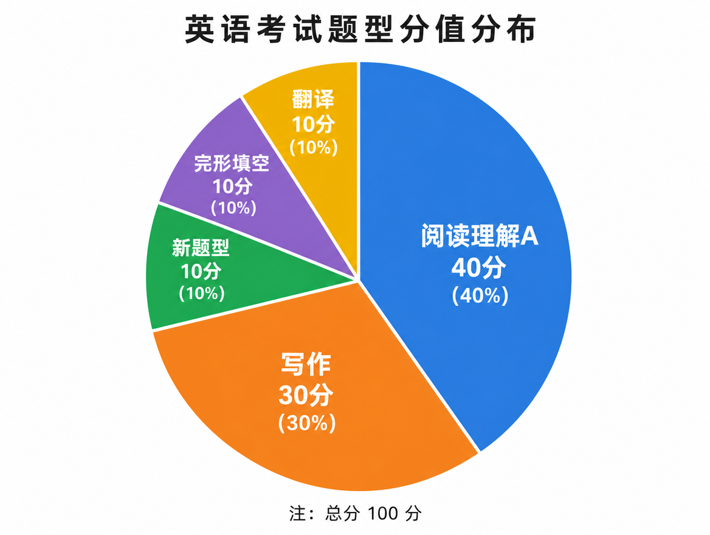
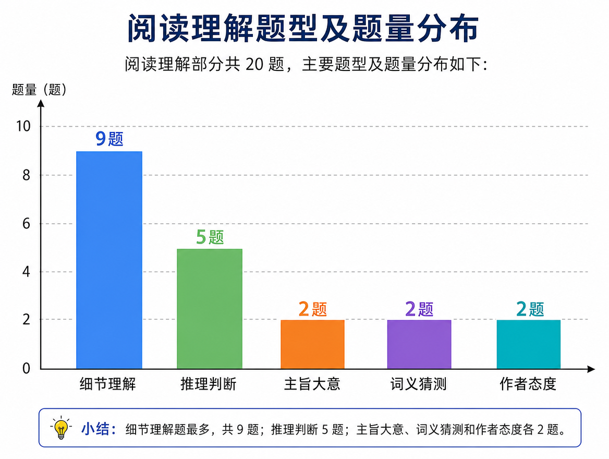

考研英语一知识体系全解

文档定位：本文档专为冲刺名校等顶尖院校的考研学子编写，力求用最实用、最高效的方法将英语一所有题型和知识点讲透。建议打印后作为每日复习的"红宝书"随时翻阅。
真题依据：本知识点梳理基于2014、2019、2024等多套真题命题风格分析，结合近十年真题高频考点提炼。
目录
- 第一部分：阅读理解A（40分）
- 第二部分：阅读理解B——新题型（10分）
- 第三部分：完形填空（10分）
- 第四部分：翻译（10分）
- 第五部分：写作（30分）
- 第六部分：词汇与语法基础
- 第七部分：备考时间规划与策略
- 附录
第一部分：阅读理解A（40分，重中之重）


【分值】 40分（4篇文章，每篇5题，每题2分） 【重要性】 ⭐⭐⭐⭐⭐ 得阅读者得天下，阅读决定英语一总分天花板
一、大纲解读与命题规律
1.1 文章题材分布
考研英语一阅读文章的题材有相对稳定的分布规律：
| 题材类型 | 出现频率 | 典型年份示例 |
|---|---|---|
| 商业经济 | ★★★★☆ | 2019 Text 1（金融短期主义）；2024 Text 1（铁钉经济史） |
| 人文社科 | ★★★★★ | 2024 Text 2（非洲育儿方式） |
| 自然科学 | ★★★☆☆ | 生物、医学、材料类研究报道 |
| 科技数码 | ★★★★☆ | 2024 Text 3（AI艺术与版权） |
| 环境生态 | ★★★☆☆ | 2024 Text 4（切萨皮克湾湿地保护） |
| 教育文化 | ★★★☆☆ | 2014 Text 3（英国艺术评论衰落） |
💡 解题技巧：遇到自己不熟悉的题材不要慌。考研阅读考查的是阅读理解能力，不是专业知识。遇到生僻概念，抓住作者态度即可。
1.2 文章来源（外刊溯源）
英语一阅读文章绝大多数改编自以下顶级外刊：
🔑 必背来源清单
| 外刊名称 | 出现频率 | 风格特点 | 代表性文章主题 |
|---|---|---|---|
| The Economist | 最高 | 观点鲜明、逻辑严谨 | 经济、政治、科技 |
| Nature / Science | 较高 | 学术性强、术语多 | 生物科技、环境 |
| Scientific American | 中等 | 科普向、语言较通俗 | 科学发现、新技术 |
| The Guardian | 中等 | 偏左、社会议题多 | 教育、社会公平 |
| The Atlantic | 中等 | 深度长文、人文气息 | 文化、心理、社会 |
| The New York Times | 较低 | 新闻性强 | 时事评论 |
| The Wall Street Journal | 较低 | 商业导向 | 金融市场、企业管理 |
💡 解题技巧：平时泛读建议以 The Economist 的 Science & Technology 和 Business 版块 为主，这两个版块的文章风格和考研阅读最接近。
1.3 题目类型分布
每篇文章5道题，20道题的整体分布大致如下：
| 题型 | 年均题量 | 难度系数 |
|---|---|---|
| 细节理解题 | 8-10题 | ★★★ |
| 推理判断题 | 4-6题 | ★★★★ |
| 主旨大意题 | 2-3题 | ★★★ |
| 词义猜测题 | 1-2题 | ★★★☆ |
| 作者态度题 | 1-2题 | ★★★★ |
| 例证题 | 1-2题 | ★★★ |
关键发现：细节题和推理题占比超过70%，这两种题型决定了你的阅读分数。主旨题和态度题虽然少，但往往是区分高分段考生的关键。
二、六大题型方法论
2.1 主旨大意题
方法论 1. 首段法：主旨句多出现在首段（尤以首段末句或第二段首句最为常见） 2. 关键词法：全文反复出现的高频名词/概念即为中心话题 3. 排除法：主旨题的正确选项必须能涵盖全文，不能是某一段的细节
标志词/题干特征： - The text mainly discusses __. - What is the passage mainly about? - Which of the following best summarizes the text? - The best title for the text would be ____.
干扰项特征： 1. 以偏概全：只涉及某一段的内容（最常见陷阱！） 2. 偷换概念：换了主语或核心话题 3. 过度推断：超出文章讨论范围 4. 正反混淆：与作者态度相反
⚠️ 易错警示：主旨题的正确选项通常比较"抽象"和"概括"，如果某个选项非常具体，包含大量细节，那它很可能是干扰项！
💡 解题技巧：做主旨题时，先快速扫一遍每段的首句，把各段大意串联起来，就能迅速把握全文框架。
真题速查： - 2024 Text 1（铁钉主题）：主旨为"廉价技术改变世界" - 2024 Text 3（AI艺术）：主旨为"艺术家对AI生成艺术的反应" - 2019 Text 1（金融短期主义）：主旨为"企业短期主义问题及长期主义对策"
（考点归类供参考，具体题号以历年原卷为准）
2.2 细节理解题
方法论 1. 题干定位法：划出关键词（专有名词、数字、时间、核心概念），回原文定位 2. 同义替换原则：正确选项很少用原文原词，而是同义改写 3. 题文同序原则：题目顺序与文章顺序基本一致（偶尔有例外）
解题四步法： 1. 读题干：圈出专有名词、数字、引号内容 2. 回定位：快速扫描文章找到对应段落 3. 细比对：将选项与原文逐词比对 4. 定答案：选择与原文意思一致的选项
⚠️ 易错警示： - 张冠李戴：A做的事说成B做的 - 扩大范围：把"some"说成"all" - 因果颠倒：把原因说成结果 - 无中生有：选项内容原文根本没提
💡 解题技巧：细节题的正确选项 = 原文某句的同义改写。如果某个选项出现了原文原词，要警惕——它可能是干扰项，后面跟了一个错误的内容。
真题速查： - 2024 Text 1 Q21：Romans buried nails 的原因定位在第二段首句 - 2024 Text 1 Q23：铁钉价格下降的主要原因定位在第四段末句"most of the credit goes to nail manufacturers who simply found more efficient ways" - 2019 Text 1 Q21：新规的动机定位在第一段"The main purpose...is to hold bankers accountable"
（考点归类供参考，具体题号以历年原卷为准）
2.3 推理判断题
方法论 1. infer 题：推一步即可，从原文可合理推出的结论 2. imply 题：暗示的深层含义，常涉及作者未明说的态度 3. suggest 题：基于原文信息的合理建议/推断
infer / imply / suggest 的微妙区别：
| 词汇 | 推理深度 | 考查重点 |
|---|---|---|
| infer | 浅层推理 | 从已知事实推出必然结论 |
| imply | 深层暗示 | 作者未明说但可感知的含义 |
| suggest | 间接表达 | 委婉的说法背后的真意 |
⚠️ 易错警示：推理题的答案必须是"推一步"就能得出的，不能过度推理！如果某个选项需要"推三步"才能得出，那它一定是错的。
正确选项特征： - 原文没有直接说，但从原文信息可以合理推出 - 通常是对原文某句话的"反向表达"或"深层解读" - 语气较委婉（may, might, likely, probably）
干扰项特征： - 过度推断：原文说A，选项跳到B、C、D - 原文复述：直接引用原文，这不是推理！ - 与原文矛盾
💡 解题技巧：做推理题时，先问自己——"原文说了什么？"然后问"从这句话能直接得出什么结论？"正确答案就在这两步之间。
真题速查： - 2024 Text 1 Q24：从第五段可以推断出铁钉"自罗马时代以来基本保持不变"（infer） - 2024 Text 4 Q39：EPA参与Chesapeake Bay Program可以推断出"确保了保护工作的协调"（infer）
（考点归类供参考，具体题号以历年原卷为准）
2.4 词义猜测题
方法论 1. 上下文线索法（最重要）：看该词前后的解释、同义/反义词、例子 2. 词根词缀法：利用词根词缀推测大致含义 3. 代入验证法：将选项代入原文看是否通顺
上下文线索类型：
| 线索类型 | 标志 | 示例 |
|---|---|---|
| 定义/解释 | is, means, refers to | "Transient investors, who demand high quarterly profits..." |
| 同义关系 | or, that is, in other words | "senior moments" — or forgetful episodes |
| 反义关系 | but, however, yet | 前后语义转折 |
| 举例说明 | for example, such as | 看例子猜概括 |
| 因果关系 | because, so, therefore | 因→果或果→因推导 |
⚠️ 易错警示： - 不要凭"感觉"选词义，必须回到原文验证 - 熟词僻义是重灾区！你以为认识的词，考研可能考它的生僻含义 - 不要选"你自己认识的那个意思"，要选"在文中语境下的意思"
💡 解题技巧：先看该词所在句子的主干，再看前后句。如果该词后面跟了一个定语从句或同位语，那从句/同位语就是对该词的解释！
真题速查： - 2014年完形填空 "fades" 考查熟词僻义：除了"褪色"，还有"衰老"的含义（完形，熟词僻义通用） - 2019 Text 1 "short-termism"：从后文解释"the desire for quick profits"可猜出含义 - 2024 Text 2 "alloparenting"：后文解释"each child is cared for by many adults"
（考点归类供参考，具体题号以历年原卷为准）
2.5 作者态度题
方法论 1. 态度词识别：作者在文中使用的形容词、副词是态度的晴雨表 2. 褒贬判断法：看作者对讨论对象用的是褒义词还是贬义词 3. 全文基调法：结合文章整体走向判断作者立场
🔑 必背态度词库
正面态度：
supportive, approving, positive, favorable, appreciative, optimistic, hopeful, sympathetic, admiring
负面态度：
critical, disapproving, negative, unfavorable, pessimistic, doubtful, skeptical, suspicious, contemptuous, scornful, hostile
客观态度：
objective, neutral, impartial, unbiased, matter-of-fact, detached
怀疑态度：
questionable, doubtful, skeptical, dubious, suspicious
🔑 "永陪选项"排除法（态度题秒杀技巧）
以下词在历年真题中几乎从不作为正确答案出现，俗称"永陪选项"（永远陪跑的选项）：
| 永陪选项 | 不选原因 |
|---|---|
| indifferent（漠不关心的） | 作者既然专门撰文讨论，就不可能"漠不关心" |
| biased / prejudiced（有偏见的） | 考研文章来源为顶级外刊，作者行文以理服人，不会公开表现偏见 |
| subjective（主观的） | 同上，作者必有依据地论证，不会自认主观 |
| puzzled / confused（困惑的） | 作者撰文是为了阐明观点，而非表达困惑 |
| uncertain / ambiguous（不确定的） | 文章必有结论或倾向，"不确定"通常不是落点 |
⚠️ 易错警示： - 为什么这些词不能选？ 作者花费笔墨写一篇文章，必然有其立场和写作目的，"冷漠、偏见、困惑"与"撰文论证"这一行为本身矛盾。 - 什么时候可以选 objective（客观的）？ 当文章同时引用了多派对立观点、作者只呈现各方立场而未明确表态时，objective / impartial 才可能是正确答案。若作者在转折后（But / Yet）给出了自己的判断，则不能选"客观中立"。
【例】题干：The author's attitude toward the new policy is ______. 选项：A. supportive B. critical C. indifferent D. puzzled 解答要点：先用"永陪选项"排除 C、D（作者撰文即表明不可能冷漠或困惑）；再回原文找转折后的评价词，判断褒贬，在 A、B 中二选一。
⚠️ 易错警示： - 注意区分 作者态度 和 文中引用某人的态度 - 如果文章引用了两派对立观点，作者可能持"客观"态度 - 如果作者使用了讽刺语气（ironic/sarcastic），要敏锐识别
💡 解题技巧：做态度题时，重点看文章的首尾段和每段的首尾句。作者的态度往往在"总结陈词"中表露无遗。
真题速查： - 2024 Text 4：作者对Chesapeake Bay未来的态度是"worried"（担忧的）——从文中"significant repercussions""too easy, and misleading"等措辞可判断 - 2019 Text 1：作者对"short-termism"持批评态度——通过引用Bank of England首席经济学家和古典经济学家的观点，暗示短期主义是问题
（考点归类供参考，具体题号以历年原卷为准）
2.6 例证题
方法论 1. 例子服务于观点：例子本身不重要，例子前面的观点句才是考点 2. 逆向定位法：先找例子，再往前找观点 3. 排除法：描述例子细节的选项通常是干扰项
标志词/题干特征： - The author mentions...to show/demonstrate/illustrate __. - The example of...is used to _. - ...is cited to ___.
解题步骤： 1. 定位例子在文中的位置 2. 往前看一句（绝大多数情况），找到观点句 3. 将观点句与选项匹配 4. 凡是只描述例子细节的选项，一律排除
⚠️ 易错警示： - 不要读例子本身！ 读例子只会浪费时间，而且容易被细节干扰 - 不要选与例子本身相关的选项，要选与"观点"相关的选项 - 如果例子出现在段首，观点可能在上一段末句
💡 解题技巧：例证题是送分题！记住一句话——例子是糖衣，观点是炮弹。糖衣（例子）不用吃，找到炮弹（观点）就行。
真题速查： - 2024 Text 1 Q22：17世纪弗吉尼亚人的例子是为了说明"当时制钉技术的珍贵"（第三段末句"underlines how scarce, costly and valuable the simple-seeming technology was"） - 2024 Text 2 Q27：德国养老院与托儿所配对的例子是为了说明"将alloparenting融入西方文化的一种方法" - 2019 Text 1 Q22：引用Alfred Marshall是为了说明"经济活动中的短期主义"
（考点归类供参考，具体题号以历年原卷为准）
2.7 指代题与句子含义题（细节题的两大变体）
除六大题型外，还有两类低频但方法固定的变体题，本质是细节题的延伸。
变体一：指代题
方法论：代词、指示词的指代对象向前找——优先在本句前半部分或前一句中寻找最近的、语法上能匹配（单复数、可数性）的名词，再代回验证语义是否通顺。
标志词/题干特征： - The word "it" (Line X, Para. X) refers to __. - The pronoun "they" in Paragraph X refers to _. - In Line X, "this/that/these" refers to ___.
解题步骤： 1. 定位代词所在句，划出句子主干 2. 向前搜索最近的名词性成分（注意：代词一般指代名词，不指代整句话，除非是 this/which 引出评价的特殊用法） 3. 检验数的一致（it 单数 / they 复数）与语义通顺 4. 排除虽然离得近但代入后逻辑不通的名词
⚠️ 易错警示： - 不要选"最近但语法不匹配"的名词（如复数名词不能作 it 的指代对象） - 插入语中的名词常是陷阱——先删插入语再找主干 - it 也可能指代前文的整个情况或做法，代入后要读一遍验证
【例】题干：The word "it" (Line 2, Para. 3) refers to ______. 原文：When the government introduced the tax, it was intended to curb speculation. 解答要点：it 为单数，向前找单数名词；government 代入后为"政府被意图遏制投机"，语义不通；the tax 代入后为"该税旨在遏制投机"，语义通顺 → 答案为 the tax。
变体二：句子含义题
方法论：句子含义题不考字面翻译，考的是该句在上下文中的言外之意。答案 = 该句前后文（观点句）的同义改写。
标志词/题干特征： - By saying "...", the author means __. - The sentence "..." (Line X, Para. X) implies that ____. - What does the author mean by "..."?
解题步骤： 1. 定位该句，先读懂其字面结构（主干即可） 2. 重点读该句前后各一句，找出它服务的观点 3. 用"如果作者想说的是 X，那么这句话就是 X 的形象/委婉表达"来对照选项 4. 排除只对原句做字面复述的选项
⚠️ 易错警示： - 字面意思选项是最大陷阱——越像原句翻译的选项越可疑 - 注意比喻、反语：作者说 "That's a start." 时，真实含义往往是"这还远远不够" - 含义题答案常含情态动词（may / often / tend to），语气比原句更平实
【例】题干：By saying "That's a start." (Para. 5), the author means ______. 解答要点：回上文看作者先肯定了某项措施（suggest beauty should not be defined by looks...），"That's a start"字面是"这是个开始"，言外之意是"方向正确但力度尚不足，还需更多行动"——选含"初步肯定+期待更多"的选项，而非"完全肯定"或"全盘否定"。
2.8 篇章结构类型总结（主旨题与例证题的上位方法论）
考研阅读文章的篇章结构高度模式化。先判断文章属于哪种结构，主旨题和例证题就有了一半答案——因为每种结构的"主旨落点"和"例子服务位置"是固定的。
| 结构类型 | 行文套路 | 主旨落点 | 例子/数据的作用 |
|---|---|---|---|
| 现象解释型 | 提出一种现象/问题 → 分析原因或机制 → （有时）给出评价 | 对现象的解释，而非现象本身 | 例子用于具体化原因或机制 |
| 观点论证型 | 亮明观点（常在首段末） → 用论据、引证层层支持 | 首段提出的那个观点 | 例子、引言直接支撑中心论点 |
| 对比型 | 介绍 A 与 B（新旧、两派、两个国家） → 对比异同 → 作者倾向 | 对比关系本身或作者的倾向 | 例子用于放大两方差异 |
| 问题解决型 | 描述问题 → 分析成因 → 提出/评价解决方案 | 解决方案或对方案的评价 | 例子用于说明问题严重性/方案有效性 |
判断三步法： 1. 读首段：是描述现象（现象解释型/问题解决型），还是直接表态（观点论证型），还是出现两方（对比型）？ 2. 扫各段首句：段落之间是"现象→原因"（解释型）、"观点→论据"（论证型）、"A→B"（对比型）还是"问题→对策"（解决型）？ 3. 看末段：有没有作者的评价或建议？有评价则主旨必须带上评价色彩。
⚠️ 易错警示： - 现象解释型的主旨不是现象——"文章讨论铁钉的历史"是以偏概全，"廉价技术如何改变世界"才是主旨 - 对比型文章的标题若只提一方，直接排除 - 问题解决型若作者对方案持保留态度（But...），主旨要体现"方案有局限"
💡 解题技巧：把结构判断写在草稿纸上（如"现象→原因→评价"），主旨题先按结构预测答案框架，再去选项中找匹配，比逐项回原文快得多。
【例】2024 Text 1（铁钉）：首段用罗马人埋铁钉的现象引入 → 中间分析铁钉价格为何下降（制造效率） → 末段升华到"廉价技术推动社会变革"。判为现象解释型，主旨落点应在"解释/升华层"，故标题必须覆盖"廉价技术改变世界"，只提"铁钉历史"的选项即以偏概全。
三、阅读长难句拆解
3.1 找主干法
方法论：英语句子千变万化，但核心结构永远是"谁做了什么"。 步骤：找谓语 → 找主语 → 找宾语/表语
实战步骤： 1. 找谓语：先找动词（注意非谓语动词不算），一个句子至少有一个谓语 2. 找主语：谓语前面的名词/代词就是主语 3. 去修饰：把定语从句、状语、插入语暂时删掉 4. 读主干：主语 + 谓语 + 宾语 = 句子核心
示例：
The main purpose of this "clawback" rule is to hold bankers accountable for harmful risk-taking and to restore public trust in financial institutions.
拆解： - 主语：The main purpose - 谓语：is - 表语1：to hold bankers accountable - 表语2：to restore public trust - 修饰：of this "clawback" rule（定语）；for harmful risk-taking（状语）；in financial institutions（状语）
主干：The purpose is to hold bankers accountable and to restore trust. （目的是让银行家承担责任并恢复信任。）
⚠️ 易错警示：遇到of/of/of结构不要晕。英语喜欢"从后往前"修饰，最后面的名词是中心词。
3.2 插入语跳过法
插入语是阅读中的"拦路虎"，但处理方法是——看到逗号+逗号，直接跳过。
插入语标志： - 双逗号之间：, ..., ..., - 双破折号之间：— ... — - 括号内：(...)
示例：
Transient investors, who demand high quarterly profits from companies, can hinder a firm's efforts to invest in long-term research.
→ 跳过插入语后：Transient investors can hinder a firm's efforts. （短期投资者会阻碍公司的努力。）
3.3 从句嵌套拆解
考研阅读中最常见的从句嵌套模式：
模式1：定语从句套定语从句
The tool, which allows anyone to create impressive images (that look not a million miles away from works in Rutkowski's style), is raising tricky questions.
拆解： - 主干：The tool is raising questions - 第一层定语从句：which allows anyone to create images - 第二层定语从句：that look not a million miles away from works
模式2：宾语从句套宾语从句
Scientists believe that intelligence can expand and fluctuate according to mental effort.
拆解： - 主干：Scientists believe [that...] - 宾语从句：intelligence can expand and fluctuate
3.4 非谓语结构识别
非谓语动词（doing/done/to do）在阅读中频繁出现，它们充当各种成分：
| 形式 | 功能 | 示例 |
|---|---|---|
| doing | 主动/进行 | The rising price（正在上涨的价格） |
| done | 被动/完成 | The problem caused by AI（被AI造成的问题） |
| to do | 目的/将来 | The desire to solve（想要解决的欲望） |
💡 解题技巧：看到非谓语动词，先判断它是主动还是被动，再判断它修饰的是哪个名词。
3.5 常考特殊句式（倒装 / 强调 / 省略 / 比较 / 多重否定）
特殊句式是长难句的"变种题眼"，命题人偏爱在这些位置设题。识别句式 → 还原语序 → 再按找主干法拆解。
句式一：倒装
识别标志：否定词 / only / so / not until 等位于句首，主谓部分倒装。
【例】
Not until the 19th century did the production of nails become fully mechanized.
还原：The production of nails did not become fully mechanized until the 19th century. 要点：见到 Not until / Only when / Never 开头，先把助动词 did/does/have 后的主语谓语"换回来"再理解。
句式二：强调句（It is ... that ...）
识别标志：It is/was + 被强调部分 + that/who + 句子其余部分。去掉 It is ... that 后句子仍完整。
【例】
It is the efficiency of manufacturers, not the scarcity of iron, that explains the falling price of nails.
还原：The efficiency of manufacturers, not the scarcity of iron, explains the falling price of nails. 要点：被强调的是"制造商的效率"而非"铁的稀缺"——这种强调结构常直接对应细节题答案。
句式三：省略
识别标志：状语从句中主语与主句一致时常省略（when/while/although + doing/done）；并列结构省略重复动词。
【例】
When exposed to moisture, iron nails rust quickly.
还原：When (iron nails are) exposed to moisture, iron nails rust quickly. 要点：把省略的主语和 be 动词补回来，注意分词的逻辑主语必须是主句主语，否则理解会错位。
句式四：比较结构
识别标志：more ... than / no more ... than / not so much A as B / the more ... the more。
【例】
The policy is not so much a solution as a temporary relief.
要点：not so much A as B = "与其说是 A，不如说是 B"，肯定 B、否定 A；no more ... than = "两者都不"；more A than B = "是 A 而不是 B"。比较结构的肯定/否定指向是细节题与态度题的高频陷阱。
句式五：多重否定
识别标志：not ... without / never ... unless / hardly ... without / not uncommon，双重否定表肯定。
【例】
It is not uncommon for new technologies to be resisted at first.
还原：New technologies are commonly resisted at first.（新技术起初遭到抵制是很常见的。）
要点：先数否定词的个数——偶数个否定相互抵消等于肯定，奇数个否定仍为否定。not uncommon = common，not without reason = with reason。
⚠️ 易错警示： - 强调句 vs 形式主语：It is ... that 去掉后句子完整 → 强调句；去掉后不通 → 形式主语（it 作形式主语，that 从句才是真主语） - 倒装句中谓语的单复数由后面的真主语决定，别被句首词骗了 - 比较结构中 as 后面的内容往往才是作者肯定的，定位题别找反方向
（以上例句为真题典型句式的教学化示例，用于演示句式结构。）
四、阅读核心解题步骤
4.1 先看题还是先读文章？
🔑 推荐策略：先看题干，再读文章
理由： 1. 带着问题读文章，阅读更有目的性，避免"读完就忘" 2. 先看题干可以预判文章主题和重点 3. 题文同序，边读边做，效率最高
具体操作： 1. 用30秒快速浏览5道题的题干（不看选项） 2. 划出关键词，预判文章主题 3. 开始读文章，读到与题目相关的地方就停下来做题 4. 做完一题继续往下读
⚠️ 易错警示：不要先看选项！选项中有很多干扰信息，先看了会影响你对文章的客观理解。
4.2 时间控制
| 阶段 | 时间分配 | 说明 |
|---|---|---|
| 浏览题干 | 30秒/篇 | 划出关键词 |
| 阅读+做题 | 15-18分钟/篇 | 不要在某道题上纠结超过2分钟 |
| 检查 | 1-2分钟 | 重点检查"定位是否准确" |
总时间：阅读A建议控制在 70-75分钟 以内。
💡 解题技巧：如果某道题超过2分钟还没思路，先标记跳过，全部做完再回头。不要让一道难题拖垮整篇文章的节奏。
4.3 正确选项 vs 干扰项特征
正确选项的五大特征：
-
同义替换：用不同的词表达相同的意思
原文："The price of nails fell by 90%" 选项："Nails became much cheaper"
-
概括转述：将原文的具体信息概括化
原文：详细列举三个原因 选项："There are several reasons"
-
正话反说：原文肯定，选项否定，但意思一致
原文："not impossible" 选项："possible"
-
语气委婉：正确选项往往用may, might, likely, probably, some等委婉词
-
符合常识：虽然不绝对，但正确选项通常不违背常识
干扰项的六大特征：
- 偷换概念：换了一个核心词
- 以偏概全：把部分说成整体
- 正反混淆：与原文意思相反
- 无中生有：原文根本没有的信息
- 张冠李戴：A做的事安到B头上
- 过度推断：推得太远，超出了原文范围
4.4 四篇文章整体顺序策略与卡壳处理
四篇文章的顺序策略：
- 不必死守 1→4 顺序：四篇文章难度并不递增。开考前用 1 分钟扫一眼四篇的首段首句，先做题材熟悉、结构清晰（首段即亮观点）的篇目，把最难啃的留到最后，保证"先拿稳分"。
- 每篇固定节奏：30 秒读题干 → 15-18 分钟阅读+做题 → 单篇绝不超 20 分钟。
- 篇间清零：做完一篇，心理上"翻篇"，不把上一篇的焦躁带进下一篇。
- 预留缓冲：四篇合计控制在 70-75 分钟，留出 5 分钟机动，用于回填跳过的题。
2 分钟卡壳处理流程：
某道题读了两遍仍无头绪时，按以下流程走，全程不超过 2 分钟：
- 再定位一次（30 秒）：题干关键词是否找错段落？换同义词（如题干 purpose → 原文 aim/goal）重新定位。
- 选项排除到两个（30 秒）：先砍掉明显违反原文的选项，缩小到二选一。
- 凭结构蒙一个（30 秒）：用 2.8 的篇章结构判断该题服务的观点，选与观点一致、语气委婉的选项，在题号上做醒目标记。
- 果断跳题（30 秒内决定）：标记后立即做下一题，绝不允许单题超过 2 分钟。
- 回填时机：本篇其余 4 题做完后再回看标记题——此时对全文理解更深，往往豁然开朗；若仍纠结，坚持第一印象，不轻易改答案。
⚠️ 易错警示：阅读丢分最多的不是难题做错，而是在难题上耗时过长、挤垮了后面简单题的节奏。记住——放弃一题的代价是 2 分，拖垮一篇的代价是 4-6 分。
💡 解题技巧：交卷前检查答题卡时，对没有充分依据的答案一律不改。考研阅读中"改错"的概率远高于"改对"。
五、真题高频考点词汇
5.0 阅读真题分类索引（2014—2024）
| 题型 | 真题示例 | 主要考法 | 做题动作 |
|---|---|---|---|
| 主旨题 | 2019 Text 1 Q25；2024 Text 1 Q25 | 文章中心、最佳标题 | 串联各段首句，排除只覆盖局部的选项 |
| 细节题 | 2024 Text 1 Q21/Q23；2022 Text 1 Q23 | 原文事实与同义替换 | 题干关键词回原文定位，逐项核对范围和因果 |
| 推理题 | 2024 Text 2 Q29 | 从原文推出一步结论 | 只推一步，不引入常识或过度推断 |
| 词义题 | 2014 Text 1 Q22 | 熟词僻义、短语语境义 | 看前后句和逻辑关系，再把选项代回验证 |
| 态度/观点题 | 2014 Text 1 Q25；2022 Text 1 Q24/Q25 | 作者对问题的判断 | 找评价词、转折句和末段观点 |
| 例证/写作目的题 | 2019 Text 1 Q24；2024 Text 2 Q27 | 某例子为何出现 | 向前找观点，判断例子是在支持、反驳还是说明 |
分类原则：同一题可能同时涉及定位、逻辑和词义，但分类按“最后决定答案的关键动作”归类。这样复盘时更容易找到自己的薄弱环节。
（考点归类供参考，具体题号以历年原卷为准）
5.0.1 年度阅读复盘表
| 年份 | Text 1 主题 | 重点题型 | 本年复盘关键词 |
|---|---|---|---|
| 2014 | 英国失业救济与求职制度 | 目的、词义、观点 | 反问句、作者讽刺、态度转折 |
| 2015 | 欧洲君主制的存续 | 细节、推理、标题 | 对比论证、让步结构、中心观点 |
| 2016 | 时尚行业与极瘦模特监管 | 细节、例证、主旨 | 法律措施、因果链、价值判断 |
| 2017 | 美国机场安检与等待时间 | 细节、推理、主旨 | 现象—原因—建议 |
| 2018 | 自动化对中产阶级工作的影响 | 细节、推理、主旨 | 让步转折、短期与长期影响 |
| 2019 | 金融市场短期主义 | 例证、推理、标题 | 例子服务于观点，长期主义 |
| 2020 | 文化小镇奖与地方文化政策 | 细节、推理、例证 | 政策目标与后果、跨段定位 |
| 2021 | 铁路票价上涨与公共服务 | 主旨、例证、推理 | 反话正说、服务与价格的矛盾 |
| 2022 | 塑料文物保存 | 细节、观点、主旨 | 事实递进、末段升华、历史意义 |
| 2023 | 气候变化教育与学校标准 | 细节、态度、例证 | 科学与政治、作者立场、事实依据 |
| 2024 | 铁钉、低成本技术与社会变化 | 细节、主旨、例证 | 具体物件引出抽象观点 |
年度使用方法：每年先只看主题和题型，限时完成一篇；第二遍再对照定位句和逻辑链；第三遍只复盘错题所属分类。不要把“做过一遍”当成“掌握”，至少要能说出每道错题错在定位、逻辑、词义还是态度。
5.0.2 2014—2024 年度案例卡
- 2014 Text 1｜失业救济与求职制度：Q22 的短语题不能按字面理解，先看上下文中“领取救济”和“找工作”的关系，再用“注册/报到”这一语境义验证。Q25 是观点题，重点看作者连续反问后的讽刺态度。
- 2015 Text 1｜欧洲君主制：文章先写西班牙危机，再转向解释君主制为什么仍有支持者。遇到 Q25 标题题，要同时覆盖“危机”和“存续原因”，不能只选“西班牙国王下台”。
- 2016 Text 1｜时尚行业与极瘦模特监管：Q25 主旨题要把“法律禁止极瘦模特”“保护健康”“行业责任”串起来；看到 measures、suggest、responsibility 等词，要识别作者的价值判断。
- 2017 Text 1｜美国机场安检等待：文章不是单纯抱怨排队，而是分析安检时间过长背后的制度和资源问题。细节题回到对应段落，推理题要区分“现象”与“作者建议”。
- 2018 Text 1｜自动化与中产工作：开头提出机器人可能取代中产工作，后文用 But、optimists 和 in the medium term 做让步。做主旨题时要同时保留长期收益和短期冲击，不能只选“自动化有害”。
- 2019 Text 1｜金融短期主义：Q24 问美国和法国例子的作用，答案不在例子细节，而在前面的观点“encourage long-termism”。这是典型的例证目的题。
- 2020 Text 1｜文化小镇奖：文章围绕文化政策如何改变地方发展展开。遇到政策类文章，先区分“政策目标、实施方式、可能后果”，不要把一个具体项目当成全文主旨。
- 2021 Text 1｜铁路票价与公共服务：Q21/Q25 都要求回到全文判断作者态度。文章表面谈票价上涨，实际批评“价格提高却没有提供相称服务”，要警惕反话正说。
- 2022 Text 1｜塑料文物保存：Q23 的答案由 splitting and crumbling 与 locked away in the dark 两处共同确定；Q25 则要读末段，从保存技术上升到材料时代和历史记忆。
- 2023 Text 1｜气候变化教育：文章围绕 Texas 学校科学标准展开，重点在科学事实与政治立场的冲突。做态度题要找作者引用专家批评的句子，不能把人物观点当作者观点。
- 2024 Text 1｜铁钉与低成本技术：Q21 是定位型细节题，Q25 是跨段主旨题。前者看 Romans 与 locals 的关系，后者把铁钉、纸张、太阳能板共同归纳为“便宜技术改变世界”。
完成标准：每年案例卡至少做一次“题干关键词 → 原文定位 → 选项改写 → 错误类型”四步标注；标注完成后，再回到对应年份 PDF 做整篇限时训练。
5.0.3 年度原文节选与定位句
为避免页面过长，这里每年只保留与讲解直接相关的 Text 1 原文节选或核心逻辑链；完整试卷仍在真题库 PDF 中。
2014｜目的/词义题
“Those first few days should be spent looking for work, not looking to sign on.” There will now be a seven-day wait for the jobseeker’s allowance.
关键词 sign on 不能只按“签字”理解，要结合 jobseeker’s allowance 和上下文，判断为登记领取救济。
2015｜君主制与标题题
“The Spanish case provides arguments both for and against monarchy. When public opinion is particularly polarised, monarchs can rise above ‘mere’ politics and embody a spirit of national unity.”
both for and against 是让步与对比信号，说明全文不会只批评君主制；标题必须同时覆盖危机和存续原因。
2016｜时尚监管与主旨题
“They suggest beauty should not be defined by looks that end up impinging on health. That’s a start.”
suggest 后面是作者价值判断，结合后文对行业责任的讨论，主旨不是单纯“介绍法国法律”。
2017｜机场安检
文章核心逻辑链：安检等待时间过长（现象）→ 制度与资源配置问题（原因）→ 改进建议（对策）。
本篇按 2.8 的问题解决型结构复盘：细节题回"现象段"定位数字与事实；推理题注意区分"客观现象描述"与"作者建议"；主旨题答案必须落在"问题+对策"上，只复述"排队太久"的选项即以偏概全。原文定位训练见真题库 PDF 对应年份。
2018｜自动化与工作
“About half of U.S. jobs are at high risk of being automated, with the middle class disproportionately squeezed. Lower-income jobs like gardening or day care don’t appeal to robots.”
disproportionately 表明影响并非平均分布；后文的 But 和 in the medium term 说明要区分短期冲击与长期收益。
2019｜金融短期主义
“The main purpose of this ‘clawback’ rule is to hold bankers accountable for harmful risk-taking and to restore public trust in financial institutions. Yet officials also hope for a much larger benefit: more long-term decision-making.”
The main purpose 直接给出 Q21 的定位答案；Q24 则要回到具体制度例子服务的上位观点。
2020｜文化小镇奖
文章核心逻辑链：设立文化奖项（政策）→ 意图带动地方经济与文化活力（目标）→ 实际效果与潜在局限（评价）。
本篇按 2.8 的观点论证型/政策评价类复盘：先划分"政策目标—实施方式—可能后果"三层，例证题中的具体小镇案例服务于上位观点而非案例本身；态度题注意作者在肯定文化价值的同时对"经济实效"的保留语气。原文定位训练见真题库 PDF 对应年份。
2021｜铁路票价
“This year’s rise, an average of 2.7 per cent, may be a fraction lower than last year’s, but it is still well above the official Consumer Price Index measure of inflation. Successive governments have permitted such increases on the grounds that the cost of investing in and running the rail network should be borne by those who use it.”
but 后是作者真正的判断。表面数字下降，实际仍高于通胀，是 Q21/Q25 识别作者态度的关键。
2022｜塑料文物
“But some plastic materials change over time. They crack and frizzle. They ‘weep’ out additives. They melt into sludge.”
连续短句制造递进，说明塑料保存的难点；后文 locked ... away in the dark 是 Q23 的直接定位线索。
2023｜气候变化教育
“Most scientists and experts sharply dispute Hardy’s views. They casually dismiss the career work of scholars and scientists as just another misguided opinion.”
作者通过专家意见与 Hardy 的观点形成对照，做态度题时要区分被引用人物的立场与作者组织材料后的整体立场。
2024｜铁钉与低成本技术
“Why had the Romans buried a million nails? The likely explanation is that the withdrawal was rushed, and they didn’t want the local Caledonians getting their hands on 10 tons of weapon-grade iron.”
didn’t want ... getting their hands on 是 Q21 的定位短语；Q25 则要继续读末段的抽象总结。
5.1 十年真题高频核心词
下表收录十年真题中反复出现的高频核心词，"出现次数"列为按真题词频统计的约值，仅供把握复习优先级参考。
| 单词 | 出现次数 | 核心含义 | 常见搭配 |
|---|---|---|---|
| account | 15+ | 解释；占...比例 | account for（解释；占） |
| address | 12+ | 解决；演讲 | address the issue（解决问题） |
| approach | 14+ | 方法；接近 | a new approach（新方法） |
| available | 13+ | 可获得的 | be available to |
| claim | 11+ | 声称；索赔 | claim that |
| concern | 16+ | 担忧；涉及 | be concerned about |
| conduct | 10+ | 进行；行为 | conduct research |
| decline | 12+ | 下降；拒绝 | on the decline |
| demonstrate | 10+ | 证明；展示 | demonstrate that |
| despite | 14+ | 尽管 | despite the fact that |
| distinguish | 10+ | 区分 | distinguish A from B |
| domestic | 10+ | 国内的；家庭的 | domestic market |
| emphasis | 11+ | 强调 | place emphasis on |
| enable | 12+ | 使能够 | enable sb to do |
| ensure | 13+ | 确保 | ensure that |
| estimate | 10+ | 估计 | it is estimated that |
| evidence | 14+ | 证据 | evidence suggests |
| exposure | 10+ | 暴露；接触 | exposure to |
| factor | 15+ | 因素 | a key factor |
| feature | 12+ | 特征；以...为特色 | a distinctive feature |
| fundamental | 10+ | 根本的 | fundamental change |
| generate | 11+ | 产生 | generate revenue |
| identify | 13+ | 识别；确定 | identify the cause |
| implication | 12+ | 含义；影响 | have implications for |
| indicate | 14+ | 表明 | the data indicates |
| inferior | 10+ | 劣等的 | be inferior to |
| innovation | 11+ | 创新 | technological innovation |
| issue | 18+ | 问题；发行 | address the issue |
| maintain | 12+ | 维持；坚持认为 | maintain that |
| manifest | 10+ | 表明；明显的 | manifest itself |
| means | 11+ | 方式；手段 | by means of |
| negotiate | 10+ | 谈判；协商 | negotiate with |
| notion | 10+ | 概念；看法 | the notion that |
| obstacle | 10+ | 障碍 | obstacle to |
| occur | 13+ | 发生 | it occurs to sb |
| pattern | 11+ | 模式 | a pattern of |
| potential | 14+ | 潜在的；潜力 | potential benefits |
| prospect | 10+ | 前景 | job prospects |
| range | 12+ | 范围；变化 | a wide range of |
| reinforce | 10+ | 加强 | reinforce the idea |
| relevant | 10+ | 相关的 | be relevant to |
| require | 14+ | 要求 | require that |
| resource | 12+ | 资源 | natural resources |
| response | 13+ | 回应 | in response to |
| restrict | 10+ | 限制 | restrict access to |
| reveal | 14+ | 揭示 | reveal that |
| significant | 16+ | 重要的；显著的 | significant impact |
| source | 13+ | 来源 | source of |
| subject | 12+ | 主题；使遭受 | be subject to |
| sustain | 11+ | 维持；遭受 | sustainable development |
| tend | 14+ | 倾向于 | tend to do |
| threat | 11+ | 威胁 | pose a threat to |
| transfer | 10+ | 转移；转让 | transfer to |
| underline | 10+ | 强调；在...下划线 | underline the importance |
| undertake | 10+ | 承担；从事 | undertake a task |
| yield | 10+ | 产生；屈服 | yield results |
5.2 熟词僻义表
⚠️ 易错警示：以下单词的"僻义"是考研阅读的常客，必须牢记！
| 单词 | 常见义 | 考研僻义 | 例句 |
|---|---|---|---|
| address | 地址 | 解决；演讲 | address the problem |
| alien | 外星人 | 陌生的；外国的 | alien culture |
| anchor | 锚 | 主持人；固定 | news anchor |
| appeal | 呼吁 | 吸引力 | have appeal to |
| assume | 假设 | 承担；呈现 | assume responsibility |
| bar | 酒吧 | 障碍；律师界 | the bar |
| betray | 背叛 | 暴露；泄露 | betray one's feelings |
| ceiling | 天花板 | 上限 | price ceiling |
| chair | 椅子 | 主持 | chair a meeting |
| check | 检查 | 制止；支票 | hold in check |
| cloud | 云 | 使模糊；阴郁 | cloud one's judgment |
| coin | 硬币 | 创造（新词） | coin a term |
| column | 柱子 | 专栏 | write a column |
| concrete | 混凝土 | 具体的 | concrete evidence |
| content | 内容 | 满足的 | be content with |
| date | 日期 | 过时 | out of date |
| doctor | 医生 | 篡改 | doctor the evidence |
| edge | 边缘 | 优势 | competitive edge |
| even | 甚至 | 平坦的；相等的 | break even |
| fair | 公平的 | 博览会 | trade fair |
| fashion | 时尚 | 方式；制作 | in a fashion |
| figure | 数字 | 人物；认为 | public figure |
| film | 电影 | 薄膜 | a film of oil |
| fine | 好的 | 罚款；细微的 | pay a fine |
| foreign | 外国的 | 无关的 | foreign to |
| game | 游戏 | 猎物；行业 | the publishing game |
| grade | 年级 | 等级；评分 | top grade |
| ground | 地面 | 理由；根据 | on the grounds that |
| hear | 听见 | 审理 | hear a case |
| hit | 打 | 轰动；袭击 | a hit movie |
| hold | 持有 | 认为；举行 | hold the view |
| husband | 丈夫 | 节约 | husband resources |
| import | 进口 | 重要性 | a matter of import |
| interest | 兴趣 | 利益；利息 | in the interest of |
| invite | 邀请 | 招致 | invite criticism |
| issue | 问题 | 发行；发布 | issue a statement |
| late | 晚的 | 已故的 | the late president |
| lay | 放置 | 世俗的；外行的 | layman |
| lean | 倾斜 | 瘦的；精简的 | lean years |
| leave | 离开 | 使...处于 | leave sb with |
| letter | 信 | 字母；字面意思 | the letter of the law |
| line | 线 | 行业；台词 | line of work |
| live | 生活 | 现场的；活的 | live broadcast |
| mean | 意味着 | 吝啬的；平均的 | the mean score |
| mine | 我的 | 矿；地雷 | coal mine |
| minute | 分钟 | 微小的 | minute details |
| narrow | 狭窄的 | 缩小；限定 | narrow the gap |
| nature | 自然 | 本质 | the nature of |
| nurse | 护士 | 养育；培育 | nurse a dream |
| paper | 纸 | 论文；文件 | term paper |
| particular | 特别的 | 细节 | in particular |
| penny | 便士 | 一分钱 | not a penny |
| period | 时期 | 句号 | at the end of the period |
| place | 地方 | 放置；排名 | place an order |
| plant | 植物 | 工厂 | power plant |
| pool | 水池 | 共享；汇集 | pool resources |
| post | 邮政 | 职位；发布 | hold a post |
| pound | 磅 | 猛烈打击 | pound on the door |
| press | 按 | 新闻界；出版社 | the freedom of the press |
| principal | 主要的 | 校长 | school principal |
| pronounce | 发音 | 宣布 | pronounce judgment |
| pupil | 学生 | 瞳孔 | dilated pupils |
| race | 种族 | 赛跑；急流 | arms race |
| radio | 收音机 | 无线电 | radio waves |
| raise | 举起 | 筹集；养育 | raise funds |
| rank | 排名 | 等级；行列 | people of all ranks |
| rare | 稀有的 | 半熟的 | rare steak |
| reach | 到达 | 范围；伸手可及 | beyond reach |
| reason | 理由 | 推理 | reason with sb |
| rest | 休息 | 剩余部分；其余的人 | the rest of |
| ring | 戒指 | 铃声；环形 | ring a bell |
| room | 房间 | 空间；余地 | room for improvement |
| rough | 粗糙的 | 粗略的；艰难的 | a rough estimate |
| safe | 安全的 | 保险箱 | a bank safe |
| saw | 看见（see过去式） | 锯子 | a hand saw |
| school | 学校 | 学派 | the Chicago school |
| season | 季节 | 调味 | season the meat |
| secure | 安全的 | 获得；固定 | secure a job |
| sentence | 句子 | 判决 | serve a sentence |
| service | 服务 | 维修；发球 | car service |
| settle | 定居 | 解决；沉淀 | settle a dispute |
| sharp | 锋利的 | 敏锐的；剧烈的 | sharp increase |
| shoot | 射击 | 拍摄；嫩芽 | shoot a film |
| shoulder | 肩膀 | 承担 | shoulder the blame |
| side | 边 | 支持；一方 | side with sb |
| sign | 标志 | 签字；征兆 | sign a contract |
| sound | 声音 | 健康的；合理的 | sound advice |
| spare | 备用的；多余的 | 抽出（时间）；饶恕 | spare no effort |
| spring | 春天 | 泉水；弹簧；跳 | hot spring |
| stage | 舞台 | 阶段；上演 | in the early stage |
| stamp | 邮票 | 踩踏；印记 | stamp out |
| stand | 站立 | 忍受；立场 | stand for |
| start | 开始 | 惊起；出发 | with a start |
| state | 国家 | 状态；陈述 | in a state of |
| steal | 偷 | 偷偷地移动 | steal a glance |
| stick | 棍子 | 坚持；卡住 | stick to |
| still | 仍然 | 静止的；蒸馏 | stand still |
| store | 商店 | 储存；大量 | a store of |
| storm | 暴风雨 | 爆发；猛攻 | storm out |
| strain | 拉紧 | 压力；品种 | under strain |
| strike | 打 | 罢工；突然想到 | go on strike |
| tender | 温柔的 | 投标；正式的 | tender one's resignation |
| term | 学期 | 术语；条款 | in terms of |
| test | 测试 | 考验 | a test of |
| tie | 领带 | 联系；平局 | tie to |
| tip | 小费 | 尖端；建议 | on the tip of |
| tire | 轮胎 | 疲劳 | be tired of |
| tower | 塔 | 高耸 | tower above |
| train | 火车 | 训练；系列 | a train of thought |
| treat | 对待 | 治疗；款待 | treat sb to |
| trip | 旅行 | 绊倒 | trip over |
| try | 尝试 | 审判；努力 | try a case |
| uniform | 制服 | 统一的 | a uniform standard |
| upset | 沮丧的 | 打翻；打乱 | upset the plan |
| value | 价值 | 重视 | value sth highly |
| voice | 声音 | 表达；语态 | voice one's opinion |
| wage | 工资 | 进行；发动 | wage war |
| want | 想要 | 缺乏；贫困 | in want of |
| water | 水 | 流泪；浇水 | make sb's mouth water |
| way | 路 | 方式；方面 | in a way |
| weigh | 称重 | 权衡 | weigh the options |
| well | 好 | 井；涌出 | as well |
| will | 将要 | 意志；遗嘱 | strong will |
| wind | 风 | 蜿蜒；缠绕 | wind through |
| yield | 屈服 | 产生（利润/结果） | yield results |
5.3 同义替换词对表
考研阅读的命题核心就是"同义替换"，以下是最常出现的替换对：
| 原文词 | 选项替换词 | 中文含义 |
|---|---|---|
| problem / issue | challenge / concern | 问题 |
| important / significant | crucial / vital / essential | 重要的 |
| decrease / decline | drop / fall / reduce / dwindle | 下降 |
| increase / rise | grow / expand / surge / soar | 上升 |
| cause / lead to | result in / bring about / trigger | 导致 |
| because / since | due to / owing to / on account of | 因为 |
| however / but | nevertheless / yet / whereas | 但是 |
| for example | for instance / such as | 例如 |
| about / concerning | regarding / with respect to | 关于 |
| think / believe | argue / hold / maintain / claim | 认为 |
| show / demonstrate | indicate / reveal / suggest | 表明 |
| use / apply | employ / utilize / adopt | 使用 |
| aim / purpose | goal / objective / intention | 目的 |
| method / way | approach / means / strategy | 方法 |
| advantage / benefit | merit / upside / virtue | 好处 |
| disadvantage / drawback | flaw / defect / downside | 缺点 |
| many / a lot of | numerous / a host of / plenty of | 许多 |
| some / certain | a proportion of / a number of | 一些 |
| often / frequently | regularly / repeatedly | 经常 |
| rarely / seldom | infrequently / hardly ever | 很少 |
| immediately / at once | instantly / promptly | 立即 |
| finally / eventually | ultimately / in the end | 最终 |
【真题速查】阅读理解A典型考法
- 2024 Text 1（铁钉经济史）：细节题+例证题+主旨题组合。考定位能力和同义替换（efficient ways → increased productivity）。
- 2024 Text 2（非洲育儿方式）：推理题（infer）+主旨题。考跨段信息整合能力。
- 2024 Text 3（AI艺术版权）：细节题+推理题+主旨题。考对复杂话题的理解和态度判断。
- 2024 Text 4（湿地保护）：推理题+态度题。考对环保议题的立场判断。
- 2019 Text 1（金融短期主义）：细节题+例证题。考对商业经济话题的理解。
（考点归类供参考，具体题号以历年原卷为准）
第二部分：阅读理解B——新题型（10分）
【分值】 10分（1篇文章，5题，每题2分） 【重要性】 ⭐⭐⭐⭐ 拿满分比阅读A容易，是性价比最高的题型 【时间建议】 15~18 分钟（每题 2 分，性价比高，值得投入）
三种题型历年考频（英语一）：
| 题型 | 考查形式 | 历年考频（2005—2024） |
|---|---|---|
| 七选五 | 文章挖 5 空，从 7 个选项中选 5 句填入 | 约 8 次，最高频 |
| 排序题 | 7~8 个段落重新排序，其中 2~3 段位置已给定 | 约 7 次 |
| 小标题对应 | 为 5 段文字（或 5 人观点）从 6~7 个标题中选配 | 约 5 次，近年回升 |
（考频归类供参考，具体年份题型以历年原卷为准）
一、七选五（最常考）
1.1 解题方法
方法论 1. 关键词复现法：选项中的核心名词/动词在文章某段重现 2. 逻辑关系法：通过转折、因果、递进、并列等逻辑关系确定衔接 3. 代词指代法：利用 this, that, these, those, such 等代词寻找前文
1.2 解题步骤
🔑 标准四步法
Step 1：先读7个选项，划出核心关键词（名词为主，每选项不超过3个）
Step 2：读文章的首段和各段首句，把握全文结构和主题
Step 3：看空格前后的句子，寻找线索词： - 代词线索：this, that, it, they, such... - 逻辑线索：however, therefore, in addition, for example... - 词汇线索：同义词、反义词、上下义词
Step 4：将匹配度最高的选项代入验证，确保逻辑通顺
1.3 空格位置功能分析
空格在段落中的位置往往暗示答案的句子功能，据此可快速缩小选项范围：
| 空格位置 | 常见功能 | 解题要点 |
|---|---|---|
| 段首空 | 多为段落主旨句，或承上启下的过渡句 | 先读完整个段落再定主旨；若选项带 however、also 等词，多为过渡句 |
| 段中空 | 承上启下，衔接前后两句 | 必须同时与前一句、后一句衔接（复现词+逻辑词双重验证） |
| 段尾空 | 多为总结句，或引出下段的过渡句 | 看选项能否归纳本段；注意与下段首句呼应 |
【例】
①（段首空）____ Studies show that students who review notes within 24 hours remember far more than those who review a week later. Spacing short reviews over several days strengthens memory even further. A. Timing matters as much as content when reviewing. B. Many students dislike reviewing their notes. → 选 A：段首空多为主旨句，全段讲“复习时机”，A 概括全段；B 与后文无关。
②（段中空）Regular exercise improves memory. ____, it also reduces the stress that interferes with learning. A. In addition B. However → 选 A：后文 also、reduces 与前文 improves 同向递进；However 表转折，语义相反。
③（段尾空）The reading room stays open until midnight during exam week, and the school adds extra shuttle buses so that students can get home safely. ____ A. These measures show how the school supports students under pressure. B. Some students prefer to study at home. → 选 A：段尾空多为总结句，These measures 指代前文两项措施；B 与本段无关。
💡 解题技巧：先按空格位置预判句子功能，再回选项中找“功能相符+词汇复现”的句子，可省一半时间。
1.4 常见陷阱
⚠️ 易错警示： - 偷换概念：选项中的某个词和原文很像，但核心概念变了 - 以偏概全：选项只涉及段落的部分内容，不是段落的完整概括 - 无中生有：选项内容原文根本没提 - 答非所问：选项本身是对的，但放错了位置
💡 解题技巧：七选五的正确选项往往不是“全文通顺”就行，而是“前后句通顺”。把选项代入空格后，要同时检查它和前一句及后一句的衔接。
二、排序题
2.1 考纲命题形式与核心策略
命题形式：排序题给出 7~8 个段落，其中 2~3 段的位置已给定，要求把其余段落排入正确位置。一处排错可能连锁出错，因此排序题是三种新题型中最需谨慎对待的。
🔑 核心策略——以已知段为锚点，向两端扩展
- 先精读位置已给定的段落，尤其是它的首句和尾句，判断“它前面该接什么、后面该引出什么”；
- 若首段未给定，先按 2.2 的方法锁定首段；
- 从锚点出发，用复现词、代词指代、逻辑连接词逐段向外拼接，排定一对相邻段再向下一格扩展；
- 全部排完后通读验证逻辑是否流畅。
2.2 解题方法
方法论 1. 找首段：首段通常不含指代词（this, that），不含转折词（but, however） 2. 找逻辑词：利用逻辑连接词确定段落顺序 3. 确定相邻段：找到两组确定的相邻段落，形成“锚点”
2.3 解题步骤
- 快速浏览所有段落：划出每段的关键词和逻辑词，并先精读位置已给定的段落
- 确定首段（若首段未给定）：排除含指代词、总结性词汇的段落
- 寻找逻辑链：以给定段为锚点向两端扩展，通过因果关系、时间顺序、递进关系排列
- 验证通读：排好后通读一遍，检查逻辑是否流畅
🔑 必背逻辑连接词表
| 逻辑关系 | 连接词 |
|---|---|
| 转折 | however, but, yet, though, although, nevertheless, on the contrary, in contrast |
| 因果 | therefore, thus, hence, consequently, as a result, because, since, so |
| 递进 | moreover, furthermore, in addition, besides, also, what's more |
| 并列 | and, or, not only...but also, both...and, either...or |
| 举例 | for example, for instance, such as, take...for example |
| 总结 | in conclusion, to sum up, in summary, overall, in short |
| 时间 | first, then, next, finally, meanwhile, subsequently, previously |
| 对比 | while, whereas, on the one hand...on the other hand, compared with |
💡 解题技巧：排序题中，出现人名、地名、具体时间的段落通常比较靠前（用于引入话题），出现“总结”“结论”的段落通常靠后。⚠️ 此规律仅作辅助，必须用逻辑词验证，不能单凭人名、地名确定顺序。
三、小标题对应
3.1 解题方法
方法论 1. 段落主旨概括法：读一段，概括其大意，再匹配小标题 2. 关键词匹配法：小标题中的核心词应在段落中复现 3. 排除法：先排除明显不相关的选项
3.2 与主旨题方法论的联系
小标题对应本质上就是“给每一段起标题”，所以它和阅读理解A的主旨大意题方法论高度一致：
- 首句法：段落首句往往就是主旨句
- 关键词法：段落反复出现的词就是核心话题
- 排除法：太具体或太宽泛的选项都不对
💡 解题技巧：小标题的正确答案通常是“名词性短语”或“动名词短语”，比如“The Importance of X”“How X Works”。如果某个选项是一个完整句子，它很可能是干扰项。
【真题速查】新题型典型考法
- 2024年（小标题对应）：5 个人对文物归还问题持不同观点，要求为每段匹配相应标题。通用解法——人名与观点匹配法：逐段读首句与尾句，用一两个关键词概括该人的核心主张（如“应归还起源国”“可用复制品替代”“获取方式须正当合法”），再与选项标题逐一比对，先匹配最有把握的段落，最后用排除法收尾。
- 2019年（排序题）：由卡耐基《人性的弱点》引入关于“争论与说服”的讨论，首段未给出。考首尾段判断、指代衔接与逻辑链。
- 2014年（排序题）：关于考古勘探方法的文章，题中已给定 2 段位置，以给定段为锚点向两端扩展是解题关键。
（考点归类供参考，具体题号以历年原卷为准）
四、新题型经典例题
4.1 七选五：先找“段落功能”
（简化示例：真题为 7 选 5，此处简化为 5 选 2，重在演示方法）
Many students treat a study plan as a timetable. A better plan also explains why each task matters. _ (1) _ When a learner understands the purpose of a task, it becomes easier to adjust the schedule without abandoning the goal.
For example, reading practice is not only about finishing a certain number of passages. It is also a way to improve locating information, following an argument, and recognizing paraphrases. _ (2) _ These smaller abilities should be checked separately when reviewing mistakes.
A. The number of pages is therefore not the only measure of progress.
B. This is why an effective plan should connect time with a specific ability.
C. Otherwise, a busy schedule may create the illusion of progress.
D. Many learners prefer to study without any written plan.
E. The same principle applies to vocabulary and writing practice.
答案：1-B，2-A。
解析：第 1 空后面出现 purpose/goal，先用 B 承接“时间与能力连接”；第 2 空前面列举 reading 的具体能力，后面说这些能力要分别检查，A 对“不能只看篇数”作总结。E 适合作为后续扩展句，但不如 A 能直接承接。
4.2 排序题：以已知段为锚点，向两端扩展
下面 7 个段落中，B、G 两段的位置已给定，请排列其余 5 段：
A. The result was a small change in daily behavior rather than a dramatic technological breakthrough.
B. The project began with a simple question: why did residents leave recyclable materials in ordinary bins?
C. After several interviews, the team found that the instructions on the bins were confusing.
D. The city replaced the labels, tested the new design, and compared the results.
E. This example shows that public services can improve through observation and small experiments.
F. Before proposing any solution, the team spent two weeks observing how residents actually used the bins.
G. Encouraged by the results, several other neighborhoods asked to join the second round of the experiment.
给定位置：1 = B，6 = G。
答案：2-F，3-C，4-D，5-A，7-E。
解析：
- 锚点 B（第 1 段）提出问题，下文应接“寻找答案”的动作：F 的 Before proposing any solution... observing 正好承接，故 2-F。
- F 说“观察”，C 的 After several interviews 是调查后的发现，且 the bins 原词复现，故 3-C。
- C 找到问题（instructions confusing），D 的 replaced the labels 正是针对该问题的行动，故 4-D。
- D 末尾 compared the results，A 的 The result 原词复现承接，故 5-A。
- 已给定的 G（第 6 段）说 Encouraged by the results，说明其前必有正面结果——A 的 a small change 正是该结果，衔接成立。
- E 的 This example shows 是全文总结句，放末段，故 7-E。
💡 解题技巧：若首段未给定（如 2014 年真题），先按 2.2 的方法锁定首段，再以给定段为锚点双向扩展；排好后务必把给定段也代入通读一遍。
4.3 小标题匹配：标题要覆盖整段
将 5 个小标题与 3 个段落匹配（含 2 个干扰项）：
I. Learning from mistakes
II. A wider definition of success
III. The danger of excessive comparison
IV. The value of a stable routine
V. Why rest is part of training
段落 1：Some students judge a study session only by the number of questions they answer. Yet a session in which they discover a repeated mistake may be more valuable than one in which they complete many easy questions. The real gain is the information that helps them change the next attempt.
段落 2：Many learners measure their progress by looking at classmates. When a classmate finishes a book earlier or scores higher on a mock test, they immediately feel they are falling behind—even when their own plan is working well. Useful feedback turns into a constant source of anxiety.
段落 3：A fixed daily routine removes the need to make the same small decisions again and again. When the time, place, and order of study tasks stay the same, learners can save their attention for the material itself rather than for planning.
答案：1-II，2-III，3-IV。
解析：
- 段落 1 把“完成题目数量”与“获得改进信息”对比，中心是重新定义学习成功的标准，故选 II。段落虽提到 mistake，但并非讲“如何从错误中学习”的具体方法，I 是以偏概全的干扰项。
- 段落 2 反复出现 classmates、falling behind、anxiety，主旨是“过度比较的危害”，故选 III。
- 段落 3 首句即主旨句（A fixed daily routine...），全段讲固定作息的价值，故选 IV。V（休息与训练）原文未涉及，是无中生有的干扰项。
第三部分：完形填空（10分）
【分值】 10分（1篇文章，20空，每空0.5分） 【重要性】 ⭐⭐⭐ 性价比不高，建议控制在15分钟内完成
一、命题规律
1.1 题材特点
完形填空的文章题材相对稳定：
| 类型 | 出现频率 | 特点 |
|---|---|---|
| 科普说明 | ★★★★☆ | 介绍某个科学发现、技术原理 |
| 健康生活 | ★★★☆☆ | 关于健康、心理、生活习惯 |
| 社会现象 | ★★★☆☆ | 讨论某个社会趋势或现象 |
| 文化教育 | ★★☆☆☆ | 关于教育、文化的历史或现状 |
近年真题题材： - 2024年：自动门的发明与应用（科技/生活） - 2019年：野外迷路导航方法（科普/生存） - 2014年：大脑认知与智力训练（健康/科技）
1.2 考点分布
| 考点类型 | 占比 | 难度 |
|---|---|---|
| 词汇辨析（近义词/形近词） | 35% | ★★★ |
| 逻辑关系（连词/副词） | 25% | ★★★ |
| 固定搭配 | 20% | ★★★ |
| 语法结构（从句/非谓语） | 15% | ★★★☆ |
| 上下文复现（直接原词复现） | 5% | ★★ |
注：上表“上下文复现”仅指直接凭原词复现即可作答的题目，故占比低；若把同义改写、逻辑推断等广义语境线索计算在内，约 80% 的空都能在上下文中找到线索（见 2.2）。两个数字口径不同，并不矛盾。
1.3 语法结构高频考法
“语法结构”类题目约占 15%，常考以下 5 类：
- 从句引导词：先判断从句类型，再选引导词。定语从句看先行词（指人用 who/that，指物用 which/that，地点用 where，时间用 when）；名词性从句看从句是否缺成分（缺成分用 what、where、when 等连接代词/副词，不缺成分用 that/whether）。如：We suddenly can't remember where we put the keys.（remember 后的宾语从句缺地点状语）
- 非谓语动词：不定式表目的/将来，现在分词表主动/进行，过去分词表被动/完成。注意介词后接 doing，如 be devoted to doing（此处 to 为介词）。
- 代词指代：it、they、this、that、one 的数和指代对象必须与前文一致；选项中含代词时，先回前文找指代对象。
- 主谓一致与平行结构：not only...but also、either...or 遵循就近一致；and 连接的并列成分形式必须一致（to do 对 to do，doing 对 doing）。
- 固定句型中的语法点：It turns out that...、There is no doubt that...、so...that... 等句型结构本身即考点。
⚠️ 易错警示：考引导词时不要只看空格所在的那半句，要先划分句子结构——先确定“这是什么从句”，再确定“从句里缺不缺成分”，两步缺一不可。
二、解题方法论
方法论：完形填空的本质是“在语篇层面选择最恰当的词”。不要孤立看空格，要看前后文的语境。
2.1 解题五步法
Step 1：首句必读 - 完形填空的首句通常不设空，它是全文的“导语” - 读完首句就能把握文章主题和基调
Step 2：第一遍通读 - 快速浏览全文，把握文章大意 - 遇到空格先跳过，不要急着选
Step 3：第二遍精做 - 逐空分析，结合上下文线索判断 - 先做有把握的题目，标记不确定的
Step 4：第三遍验证 - 将选好的答案代入全文通读 - 检查逻辑是否通顺、搭配是否恰当
Step 5：回头攻克 - 最后处理标记的题目 - 凭语感+语法+搭配综合判断
2.2 上下文线索法
广义地讲，完形填空约 80% 的空都能在上下文中找到线索（不限于原词，还包括同义改写、逻辑推断、搭配呼应等）：
| 线索类型 | 说明 | 示例 |
|---|---|---|
| 原词复现 | 空格处的词以原词形式在上下文再现 | 上文出现“senior moments”，后文空格处仍选“senior moments” |
| 同义复现 | 上下文中出现同义或近义表达 | 上文说“exercise”，下文选“workouts” |
| 反义复现 | 上下文中出现反义词 | “but”转折前后语义相反 |
| 解释说明 | 后文对空格处进行解释 | “senior moments”—or forgetful episodes |
| 因果逻辑 | 根据因果关系推断 | “Because”前因后果 |
2.3 逻辑关系判断法
完形填空常考逻辑关系词，掌握以下逻辑关系是拿分关键：
| 逻辑关系 | 标志词 | 解题要点 |
|---|---|---|
| 转折 | but, however, yet, though, although, while | 前后语义相反 |
| 因果 | because, since, so, therefore, thus | 前因后果或前果后因 |
| 并列 | and, or, not only...but also, as well as | 前后语义一致 |
| 递进 | moreover, besides, furthermore, in addition | 语义加深 |
| 条件 | if, unless, provided that, as long as | 条件与结果 |
| 让步 | although, though, even if, while | 主句与从句语义相反 |
2.4 复现词法
完形填空的文章往往围绕一个核心话题展开，核心概念会在文中反复出现。
💡 解题技巧：如果某个空格让你填一个名词，先在文章中找到这个话题的核心词，然后选择与之相关的选项。
2.5 搭配法
固定搭配是完形填空的传统考点：
- 动词+介词：depend on, result in, lead to
- 形容词+介词：be aware of, be familiar with
- 名词+介词：attention to, solution to
- 动词+副词：turn out, give up, set up
三、完形高频词组与搭配
3.1 常考介词搭配
| 动词/名词/形容词 | 搭配 | 含义 |
|---|---|---|
| account | account for | 解释；占...比例 |
| adapt | adapt to | 适应 |
| amount | amount to | 总计；相当于 |
| appeal | appeal to | 吸引；呼吁 |
| apply | apply for / apply to | 申请；适用于 |
| attribute | attribute to | 归因于 |
| belong | belong to | 属于 |
| benefit | benefit from | 从...受益 |
| care | care for / care about | 照顾；关心 |
| comply | comply with | 遵守 |
| conform | conform to | 符合；遵守 |
| consist | consist of | 由...组成 |
| contribute | contribute to | 促成；贡献 |
| cope | cope with | 应对 |
| deal | deal with | 处理 |
| devote | devote to | 致力于 |
| dispose | dispose of | 处理；处置 |
| engage | engage in | 从事；参与 |
| insist | insist on | 坚持 |
| interfere | interfere with | 干涉；妨碍 |
| object | object to | 反对 |
| participate | participate in | 参加 |
| prefer | prefer A to B | 喜欢 A 胜过 B |
| refer | refer to | 参考；指的是 |
| rely | rely on | 依赖 |
| respond | respond to | 回应 |
| result | result in / result from | 导致；由...引起 |
| search | search for | 搜索 |
| specialize | specialize in | 专攻 |
| suffer | suffer from | 遭受 |
| supply | supply sb. with sth. | 向某人供应某物 |
3.2 常考逻辑连接词
表示因果：
because, since, as, for, due to, owing to, thanks to, as a result, therefore, thus, hence, consequently, lead to, result in, give rise to
表示转折：
but, however, yet, though, although, even though, nevertheless, nonetheless, whereas, while, on the contrary, in contrast, instead, rather
表示递进：
besides, moreover, furthermore, in addition, what's more, also, not only...but also, and, as well as
表示举例：
for example, for instance, such as, like, take...for example
表示总结：
in conclusion, to sum up, in summary, in short, in brief, overall, on the whole
表示条件：
if, unless, provided that, as long as, on condition that, suppose, assuming
四、完形填空真题切片演练
【例】（以 2014 年“大脑训练”篇前两段为蓝本节选，空序与选项按教学演示编排）
As many people hit middle age, they often start to notice that their memory and mental clarity are not what they used to be. We suddenly can't remember 1 we put the keys just a moment ago, or an old acquaintance's name, or the name of an old band we used to love. As the brain 2, we refer to these occurrences as “senior moments”. While seemingly innocent, this loss of mental focus can potentially have a(n) 3 impact on our professional, social, and personal 4.
Neuroscientists are increasingly showing that there's actually a lot that can be done. It 5 that the brain needs exercise in much the same way our muscles do, and the right mental 6 can significantly improve our basic cognitive functions.
| 题号 | 选项 |
|---|---|
| 1 | A. when B. where C. why D. that |
| 2 | A. improves B. fades C. recovers D. collapses |
| 3 | A. damaging B. limited C. uneven D. obscure |
| 4 | A. wellbeing B. environment C. relationship D. outlook |
| 5 | A. turns out B. figures out C. points out D. finds out |
| 6 | A. roundabouts B. workouts C. associations D. responses |
答案：1-B，2-B，3-A，4-A，5-A，6-B。
逐空解析：
- 第 1 空 B（where）：语法结构题（宾语从句引导词）。remember 后接宾语从句，从句主谓宾完整、缺地点状语（钥匙放在哪里），故选 where；that 用于不缺成分时，when/why 与“放钥匙”的语境不符。→ 对应 1.3 第 1 条。
- 第 2 空 B（fades）：词汇辨析+上下文复现。上文“memory and mental clarity are not what they used to be”已点明大脑功能在衰退，fades（逐渐衰退）与下文的“senior moments”同义呼应；collapses 程度过重（指彻底崩溃），improves/recovers 方向相反。→ 对应 2.2 同义复现。
- 第 3 空 A（damaging）：逻辑关系题。While 引导让步——“看似无害，实则有害”，空格须填负面词，damaging（有害的）符合；limited、uneven、obscure 均无法与 seemingly innocent 构成转折对比。→ 对应 2.3 让步转折。
- 第 4 空 A（wellbeing）：固定搭配+平行结构。personal wellbeing 为常用搭配，且 professional、social、personal 三个形容词并列修饰同一名词，wellbeing（福祉）涵盖面最广。→ 对应 2.5 搭配法。
- 第 5 空 A（turns out）：固定句型题。It turns out that...（事实证明……）是完形高频句型；figure out、point out、find out 的主语一般是人，不接 It...that 结构。→ 对应 2.5 搭配法。
- 第 6 空 B（workouts）：同义复现。上句刚出现 exercise，mental workouts（脑力训练）与之同义呼应；roundabouts（环岛）是形近干扰项。→ 对应 2.2 同义复现。
💡 解题技巧：6 个空分别对应语法、复现、逻辑、搭配四类考点——完形没有“纯语感题”，每道题都能在 1.2 考点表中找到归属。做题时先判断考点类型，再调用对应方法。
【真题速查】完形填空典型考法
- 2024年（自动门）：考查逻辑关系（Despite, Although, As well as）、固定搭配（start out, act as, keep track of）、词汇辨析。
- 2019年（野外导航）：考查逻辑关系（If, Since, Yet, So）、词汇辨析（literally, eventually）、固定搭配（run on batteries, lead to civilization）。
- 2014年（大脑训练）：考查词汇辨析（fades vs collapses, workouts vs exercises）、逻辑关系（While, However）、固定搭配（turns out, keep track of）。
- 高频规律：完形填空中，turn out, keep track of, take a step, result in 等短语反复出现，务必牢记。
（考点归类供参考，具体题号以历年原卷为准）
五、冲刺保分策略
完形填空 20 空共 10 分、每空仅 0.5 分，是全卷单位分值最低的题型。冲刺阶段的目标是“用最少的时间拿稳基础分”，而不是追求满分。
🔑 五大保分原则
- 做题顺序：放到最后做。推荐顺序：阅读 A → 新题型 → 翻译 → 写作 → 完形（写作也可按个人习惯提前）。完形对时间不敏感，最后做即使时间紧张，损失也可控。
- 时间上限：15 分钟。超时边际收益骤降，应把时间让给阅读和写作。
- 先易后难：第一遍只做逻辑词题和固定搭配题（见 2.3、2.5，最快最稳）；第二遍做词汇辨析与语法题；第三遍凭语感处理剩余难题。单题死磕不超过 30 秒。
- 保底策略：全选同一项。历年真题答案基本按 A、B、C、D 各约 5 个均匀分布；时间实在不够时全选同一选项（如全选 C），理论上可稳拿约 2.5 分。若已做出大部分题目，剩余不会的题全选已选答案中出现次数最少的字母，期望得分更高。（网传“全选同一项按作废处理”并无依据，机读卡按实际作答计分。）
- 蒙题技巧：两个选项含义相反，答案常在其中之一；两个选项含义相近，很可能都不是答案；连词题拿不准时，优先选高频逻辑词（however, although, because, while）。
⚠️ 易错警示：保底策略是“时间崩盘时的急救包”，不是常规打法。平时训练仍须按 2.1 五步法完整做题，冲刺目标分数应定在 6~7 分。
第四部分：翻译（10分）
【分值】 10分（5个划线句，每句2分） 【重要性】 ⭐⭐⭐⭐ 容易拉开分差，译通顺比译"雅"更重要
一、评分标准与得分要点
1.1 评分三原则
考研翻译评分遵循"准确、通顺、完整"三大原则：
| 原则 | 含义 | 得分要点 |
|---|---|---|
| 准确 | 忠实原文，不能漏译、错译 | 关键词译对得分 |
| 通顺 | 符合汉语表达习惯 | 不说"欧化中文" |
| 完整 | 不能遗漏原文信息 | 每个成分都要译出 |
1.2 踩分点识别
每个翻译句子2分，通常按以下方式分配：
- 主干翻译正确：0.5分（主谓宾/主系表译对）
- 从句翻译正确：0.5分（定语从句、状语从句等）
- 关键词翻译正确：0.5分（核心名词、动词、形容词，含熟词僻义）
- 整体通顺：0.5分（语序合理，符合中文习惯）
💡 解题技巧：翻译时先找主干，再处理从句和修饰成分。主干译对至少能拿0.5-1分。
⚠️ 易错警示：划线句中的代词（it/this/they/them）必须还原为所指名词，漏还原会被视为"不准确"而扣分（详见2.7）。
二、翻译方法论
2.1 拆分法
方法论：翻译长难句的核心是"拆分"——把复杂的英文句子拆成简单的中文短句。
三步走：找主干 → 拆从句 → 译修饰
Step 1：找主干 - 找到句子的主语、谓语、宾语/表语 - 这是句子的核心，必须译对
Step 2：拆从句 - 识别定语从句、状语从句、同位语从句、宾语从句 - 把从句拆出来单独翻译
Step 3：译修饰 - 处理介词短语、分词短语、不定式等修饰成分 - 调整语序，使译文符合中文表达习惯
示例：
The researchers are convinced that the elephants always know precisely where they are in relation to all the resources they need, and can therefore take shortcuts, as well as following familiar routes.
拆解： - 主干：The researchers are convinced [that...] - 宾语从句1：the elephants always know precisely where they are - 定语从句：they need（修饰 resources） - 并列谓语：can take shortcuts, as well as following familiar routes
译文：研究人员相信，大象总是知道它们相对于所有所需资源的准确位置，因此可以走捷径，并遵循熟悉的路线。
2.2 词性转换法
英语和汉语的表达习惯不同，翻译时经常需要转换词性：
| 转换类型 | 英文原文 | 中文译文 |
|---|---|---|
| 名词→动词 | the use of | 使用... |
| 形容词→动词 | be aware of | 意识到... |
| 介词→动词 | for the purpose of | 为了... |
| 动词→名词 | The situation has changed. | 形势发生了变化。 |
| 被动→主动 | be designed to | 旨在... |
2.3 增译与减译
增译：英文省略了，中文需要补出来（只补语法与语气需要的词，不添加原文没有的含义）
英文：To a certain extent, our ability to excel in making the connections is inherited.
译文：在某种程度上，我们在建立这些连接方面出类拔萃的能力是与生俱来的。
说明：增补"在……方面"是为了让中文搭配完整，属于中性增译；不能凭空添加原文没有的含义（如给"连接"加上"智力驱动"之类的修饰）。
减译：英文有，中文不需要（多为冠词、物主代词、形式主语等）
英文：He put his hands into his pockets.
译文：他把手插进口袋。（物主代词 his 省略不译）
2.4 被动语态的处理
英语被动语态多，汉语少用被动。翻译时通常转换为：
| 处理方式 | 示例 |
|---|---|
| 改为主动 | "is designed to" → "旨在" |
| 用"被/由/受/得到"等 | "is influenced by" → "受到...的影响" |
| 用"是...的"结构 | "was discovered in 1960" → "是1960年发现的" |
| 无主语句 | "It is believed that" → "人们认为" |
2.5 长难句翻译实战步骤
- 通读全句：先整体理解句子大意
- 划分成分：用斜线把句子分成若干部分
- 翻译主干：先译核心主谓宾
- 处理从句：逐个翻译从句，调整语序
- 润色成文：把所有部分连起来，调整语序和用词
- 通读检查：读一遍译文，确保通顺
2.6 词义选择与熟词僻义
一词多义是翻译踩分点的重灾区：划线句中一旦出现"熟词僻义"，该词往往就是0.5分踩分点。判定词义用词义引申三法：
方法一：按词性定词义
同一单词词性不同，词义不同：
| 单词 | 词性与词义 |
|---|---|
| suspect | v. 怀疑 / n. 嫌疑犯 |
| present | adj. 在场的、目前的 / n. 礼物 / v. 呈现 |
| address | n. 地址 / v. 处理、向…致辞 |
方法二：按上下文（搭配与话题）定词义
| 单词 | 常见义 | 僻义（真题取向） |
|---|---|---|
| school | 学校 | 学派（a school of thought 一个思想学派） |
| game | 游戏 | 猎物（big game 大型猎物） |
| run | 跑 | 经营（run a company）、运转 |
| tell | 告诉 | 分辨（tell right from wrong 分辨是非） |
| course | 课程 | 进程、航向（the course of history 历史进程） |
| put out | 熄灭 | 发布（messages put out through social media 通过社交媒体发布的信息） |
| develop | 发展 | 患上（develop a disease）、冲洗（胶卷） |
方法三：按褒贬色彩定词义
根据作者的态度选褒义或贬义译法：
| 单词 | 褒义 | 贬义 |
|---|---|---|
| aggressive | 有进取心的 | 咄咄逼人的、侵略性的 |
| ambitious | 雄心勃勃的 | 野心勃勃的 |
| stubborn | 执着的 | 顽固的 |
【例】The term "intelligence" in this school of thought refers to the ability to adapt.
- 题干要点：school 不能译"学校"，由上下文（school of thought 固定搭配）定为"学派"。
- 解答要点：这一学派认为，"智力"一词指的是适应能力。
⚠️ 易错警示：不要见到熟词就套最常见义项。先判断词性，再看搭配，最后看褒贬，三步走完再下笔。
2.7 指代还原：代词必还原
英文代词（it/this/that/they/them/its）指代前文的名词。中文若一律直译为"它/这/他们"，往往指代不明、语义不通。划线句中的关键代词必须还原为所指名词，这是"准确"原则的直接踩分点。
判定三步：
- 找出代词语法上指代的名词（单复数一致、语义通顺）
- 把直译的"它/这/他们"放回译文读一遍，看中文读者能否明确其所指
- 不能明确 → 还原为名词；能明确 → 可保留"这/它"（如 This is why... → 这就是为什么……）
【例】The theory is complex, but it has changed the way we understand the universe.
- 题干要点：it 指代 the theory，直译"但它"虽可懂，但主语转换处还原更稳妥。
- 解答要点：这个理论很复杂，但这一理论改变了我们理解宇宙的方式。
【例】Elephants can detect the scents and use them to locate food.
- 题干要点：them 指代 the scents（复数），不是 elephants。
- 解答要点：大象能察觉到这些气味，并利用气味来定位食物。
💡 技巧：代词还原与 3.8 的 it 形式主语要区分开——形式主语的 it 无实际所指，不译；指代代词的 it 有实际所指，必须还原。
🔑 翻译总口诀：先主干、后枝节；代词还原，被动转主动；短定前置，长定后置；词义三看——看词性、看上下文、看褒贬；比较否定莫大意；先译后调，卷面干净。
三、翻译常见句型与结构
3.1 定语从句翻译
【考频】 ⭐⭐⭐⭐⭐ 几乎每年必考，长定语从句是拆分法的核心对象
| 类型 | 翻译方法 | 示例 |
|---|---|---|
| 短定语从句 | 前置法（译成"...的"） | the man who wrote the book → 写这本书的人 |
| 长定语从句 | 后置法（译成并列句） | the theory, which has been proved... → 该理论已被证实... |
| 非限制性定语从句 | 译成独立小句 | ..., which surprised everyone → ...,这使所有人都感到惊讶 |
⚠️ 易错警示：如果定语从句过长（超过8个词），不要强行前置，否则会读起来很拗口。后置法更自然。
3.2 状语从句翻译
【考频】 ⭐⭐⭐⭐ 时间、原因、条件、让步从句高频出现
| 类型 | 翻译方法 | 示例 |
|---|---|---|
| 时间状语从句 | 译在主句前 | When I arrived, he left. → 我到的时候，他已经走了。 |
| 原因状语从句 | 译在主句前或后 | Because it rained, we stayed home. → 因为下雨，我们待在家里。 |
| 条件状语从句 | 译在主句前 | If you study hard, you will pass. → 如果你努力学习，你会通过的。 |
| 让步状语从句 | 译在主句前 | Although he is young, he is capable. → 虽然他很年轻，但他很有能力。 |
| 目的状语从句 | 译成"为了""以便" | so that, in order that → 为了... |
| 结果状语从句 | 译成"以至于""结果" | so...that, such...that → 如此...以至于... |
3.3 同位语从句翻译
【考频】 ⭐⭐⭐ 常与长难句结合考查
同位语从句通常用"即""也就是""...这一"来连接：
The idea that one might burn down an entire house just to reclaim the nails underlines how scarce the technology was.
译文：一个人可能烧掉整栋房子只是为了取回钉子，这一想法凸显了这项技术是多么稀缺。
3.4 倒装句翻译
【考频】 ⭐⭐ 偶考，识别出倒装即可按正常语序译
英语倒装句在翻译时按正常语序译即可：
Not only did the company lose money, but it also lost reputation.
译文：这家公司不仅赔了钱，还丢了声誉。
3.5 分隔结构翻译
【考频】 ⭐⭐⭐ 插入语分隔主谓是真题常客
分隔结构是指主语和谓语之间被插入语或从句隔开：
The price of nails, as economist Daniel Sichel points out in a research paper, fell by 90%.
译文：正如经济学家Daniel Sichel在一篇研究论文中指出的那样，铁钉的价格下降了90%。
💡 解题技巧：遇到分隔结构，先跳过中间部分，把主语和谓语连起来看，就能理解主干。
3.6 名词性从句翻译（主语从句、宾语从句、表语从句）
【考频】 ⭐⭐⭐⭐ what 引导的名词性从句近年频繁出现
名词性从句包括主语从句、宾语从句、表语从句和同位语从句（同位语从句见3.3）。翻译以顺译为主：
| 类型 | 翻译方法 | 示例 |
|---|---|---|
| 主语从句 | 按原文语序顺译 | What he said is true. → 他说的话是真的。 |
| 宾语从句 | 顺译，that 常省略不译 | I think that he is right. → 我认为他是对的。 |
| 表语从句 | 顺译，常译"…的原因/问题在于…" | The question is whether we can finish on time. → 问题在于我们能否按时完成。 |
| what 引导 | 译"……的（事情/东西/地方）" | what the outcomes will be → 结果会是什么 |
【例】This is why no-one is quite sure what the outcomes of using AI will be.
- 题干要点：why 引导表语从句顺译"这就是……的原因"；what 引导宾语从句译"……会是什么"。
- 解答要点：这就是为什么没有人十分确定使用人工智能会带来什么样的结果。
⚠️ 易错警示：It is believed that... 这类"形式主语+主语从句"不要顺译成"它被相信"，按3.8处理为"人们认为……"。
3.7 比较结构翻译
【考频】 ⭐⭐⭐ 否定式比较是设错高发区
| 结构 | 含义 | 示例 |
|---|---|---|
| more than + 数词 | 超过、多达 | more than 100 → 超过100 |
| more A than B | 是A而不是B（肯定前者） | He is more brave than wise. → 他有勇无谋。/ 与其说他聪明，不如说他勇敢。 |
| not so much A as B | 与其说是A，不如说是B（否定前者） | He is not so much a writer as a reporter. → 与其说他是个作家，不如说他是个记者。 |
| no more than | 仅仅、只有（强调少） | no more than five → 只有五个 |
| not more than | 至多、不超过（客观陈述） | not more than five → 至多五个 |
| no less than | 多达、竟有（强调多） | no less than 1,000 → 多达一千 |
| no more...than... | 两者都不 | He is no more diligent than you. → 他和你一样都不勤奋。 |
易混对照：
| 对照 | 区别 |
|---|---|
| no more than vs not more than | "仅仅"（嫌少，带感情）vs"至多"（客观，无褒贬） |
| more A than B vs not so much A as B | 意思相近、语序相反：前者肯定A，后者否定A |
【例】It was not so much the many blows he received as the lack of fighting spirit that led to his losing the game.
- 题干要点：not so much A as B = 否定A、肯定B；本句同时是强调句（见3.8）。
- 解答要点：与其说是因为挨了太多拳，不如说是因为缺乏斗志，他才输掉了比赛。
⚠️ 易错警示：no more than 与 not more than 一字之差、褒贬相反，落笔前先把数量词的语气判断清楚。
3.8 强调句与 it 形式主语
【考频】 ⭐⭐⭐ "It is...that" 开头句型必须会判定
1. 强调句：It is/was + 被强调部分 + that/who...
判定方法：把 It is/was...that... 去掉，剩余部分仍能组成完整句子 → 强调句。译法：加"正是""就是""是……的"。
【例】It is the spirit of hard work that leads to success.
- 解答要点：正是勤奋的精神带来了成功。
2. It is not until...that... 句型
固定译法："直到……才……"。
【例】It was not until midnight that the experiment ended.
- 解答要点：直到午夜，实验才结束。
3. it 作形式主语（主语从句后置）
判定方法：It is + 形容词/过去分词 + that/to do，且 it 在前文找不到所指 → 形式主语，it 不译，that 从句是真正的主语，顺译即可。
| 句型 | 译法 |
|---|---|
| It is said / reported that... | 据说 / 据报道…… |
| It is believed that... | 人们认为…… |
| It is obvious / clear that... | 显然…… |
| It is important to do... | 做……很重要 |
| It turns out that... | 事实证明…… |
⚠️ 易错警示：强调句与形式主语都以 "It is...that" 开头。区分口诀——去掉 "It is...that"，剩余部分能独立成句的是强调句，缺主语不能成句的是形式主语。
四、考场策略
- 建议用时：全篇约20分钟（每句约4分钟）。翻译性价比高，不要留到最后仓促应付，也不要逐字打磨超过25分钟挤占写作时间。
- 先译后调：先通读全文一遍把握话题与代词所指 → 逐句拆分主干与从句 → 组织语序 → 调整润色成通顺中文后再誊写，避免边想边写造成大面积涂改。
- 卷面书写：答案写在答题卡规定区域并标清题号（46）–（50）；字迹工整、间距适中；修改用一条横线划去，不涂黑团；个别词不会也不要空着——按上下文合理推测、写完整句，完整通顺的句子能保住主干分。
【真题速查】翻译典型考法
2024年真题（大象的导航与嗅觉）： - （46）考查并列句翻译和插入语处理——"即使它们不在视线范围内" - （47）考查宾语从句和并列谓语——"因此可以走捷径，并遵循熟悉的路线" - （48）考查同位语从句和原因状语从句——"特别是因为它们视力实际上不是很好" - （49）考查分词结构和冒号后的解释——"每一种植物或树都有自己独特的气味" - （50）考查宾语从句和不定式并列——"识别适合食用的树丛，并评估每一片树丛中树木的品质"
2023年真题（人工智能与数字营销）： - （46）考查被动语态转主动和分词短语后置定语——"识别客户生活方式的选择""通过社交媒体发布的营销信息" - （48）考查过去分词作定语和 what 引导的宾语从句——"用于模拟人际互动的算法""会带来什么样的结果" - （49）考查条件状语从句和并列谓语——"如果客户不愿意分享数据"
2022年真题（拿破仑战争中的密码战）： - （46）考查定语从句和插入语——"造密码的人与破密码的人之间的较量"
三年对照：
| 年份 | 文章题材 | 高频考点 |
|---|---|---|
| 2024 | 动物行为（大象导航与嗅觉） | 宾语从句、同位语从句、插入语、分词结构 |
| 2023 | 科技应用（AI与营销） | 被动转主动、分词定语、名词性从句、条件状语从句 |
| 2022 | 历史科普（半岛战争密码战） | 定语从句、插入语、被动语态、长句拆分 |
（考点归类供参考，具体题号以历年原卷为准）
命题规律：翻译题越来越偏向科普类文章，长句多、从句多，但话题不算太专业。关键是拆分+语序调整。
第五部分：写作（30分）

【分值】 30分（小作文10分 + 大作文20分） 【考频】 ⭐⭐⭐⭐⭐ 每年必考：小作文为应用文（书信/通知为主），大作文为图画或图画+图表作文 【难度】 ⭐⭐⭐ 套路化程度高，通过"模板+语块"训练即可快速提分 【重要性】 ⭐⭐⭐⭐⭐ 作文是冲刺高分的关键，也是短期内提分最快的板块
一、小作文（应用文，10分）
1.1 书信类格式模板
🔑 所有书信的基本格式：
Dear [Name],
[开头寒暄 + 表明写信目的]
[主体段落：分点展开]
[结尾：表达期待 + 祝福语]
Yours sincerely, / Yours truly, / Yours,
[署名]
词数要求：小作文要求约100词，建议写100—120词。少于90词容易要点不全，超过130词则易出错并挤占大作文时间。
⚠️ 易错警示：署名必须用题目指定的名字（英语一通常为"Li Ming"）！每年都有考生顺手签上自己的真名，署名错误会被扣格式分。
1.2 各类书信写作模板
（1）建议信
开头：I am writing to offer some suggestions regarding [话题].
主体：Firstly, I suggest that you [建议1]. Secondly, it would be advisable to [建议2]. Thirdly, you might consider [建议3].
结尾：I hope you will find these suggestions helpful. Please feel free to contact me if you need further assistance.
（2）道歉信
开头：I am writing to sincerely apologize for [事件].
主体：I deeply regret that [解释原因]. I understand that this has caused you [影响]. To make up for it, I would like to [补救措施].
结尾：Once again, please accept my sincere apologies. I assure you that this will not happen again.
（3）感谢信
开头：I am writing to express my heartfelt gratitude for [帮助].
主体：Your [具体帮助] was invaluable to me. Without your assistance, I would not have been able to [结果]. I truly appreciate [具体细节].
结尾：Thank you once again for your generosity. I look forward to the opportunity to return the favor.
（4）投诉信
开头：I am writing to bring to your attention a problem I encountered with [产品/服务].
主体：On [日期], I [购买/使用经历]. However, [问题描述]. This is unacceptable because [原因]. I would like to request [具体诉求].
结尾：I trust that you will take this matter seriously and resolve it promptly. I look forward to your response within [时间].
（5）邀请信
开头：I am writing to invite you to [活动].
主体：The event will take place on [日期] at [地点]. [活动介绍]. Your presence would be a great honor, and I believe [对方参与的意义].
结尾：I sincerely hope you will be able to join us. Please let me know if you can attend by [日期].
（6）推荐信
开头：I am writing to recommend [被推荐人] for [职位/机会].
主体：I have known [被推荐人] for [时间] and can attest to [能力/品质]. [具体事例]. I am confident that [被推荐人] would be an excellent candidate because [原因].
结尾：I strongly recommend [被推荐人] without reservation. Please do not hesitate to contact me if you require further information.
（7）求职信
开头：I am writing to apply for the position of [职位] advertised in [来源].
主体：I graduated from [学校] with a degree in [专业]. [工作经验/技能]. I believe I am well-suited for this position because [匹配点].
结尾：I would welcome the opportunity to discuss my qualifications further. I am available for an interview at your convenience.
（8）辞职信
开头：I am writing to inform you of my decision to resign from my position as [职位].
主体：My last day of work will be [日期]. [简要说明原因，不必太详细]. I am grateful for [感谢公司提供的机会].
结尾：I will ensure a smooth transition of my responsibilities. Thank you for your understanding.
（9）询问信
开头：I am writing to inquire about [事项/信息].
主体：I would be grateful if you could provide me with detailed information regarding [问题1]. In addition, I would like to know [问题2]. Finally, could you please tell me whether [问题3]?
结尾：Thank you for your time and assistance. I look forward to your reply at your earliest convenience.
（10）祝贺信
开头：I am writing to extend my heartfelt congratulations on [喜事].
主体：I was thrilled to hear that [具体内容]. This achievement is a testament to your [努力/才华]. You truly deserve this success.
结尾：Once again, please accept my sincere congratulations. I wish you continued success in the future.
（11）欢迎信（2022年真题即"欢迎+建议"复合信）
开头：I am writing, on behalf of [组织], to extend our warmest welcome to you.
主体：To help you settle in quickly, I would like to offer some suggestions. Firstly, [建议1]. Secondly, [建议2]. Finally, [建议3].
结尾：Once again, welcome! I hope you will have a wonderful time here. Please feel free to contact me if you need any help.
💡 解题技巧：近年小作文常考"复合信"（如欢迎+建议、推荐+介绍、回复+致谢）。不必另背新模板，把两类功能句拼接即可——先完成第一功能，再自然过渡到第二功能。
1.3 通知/告示
格式：
Notice / Announcement
[正文：说明通知的目的、时间、地点、要求等]
[发布单位]
[日期]
【例】完整范文（参照2020年真题"歌唱比赛通知"，约100词）：
Notice
To enrich students' campus life, the Students' Union will hold an English singing contest.
The contest is scheduled for 7:00 p.m. next Friday in the university auditorium. Students from all departments are welcome to sign up. Each contestant may perform one English song of no more than five minutes, and prizes will be awarded to the top three performers.
Those who are interested please register at the Students' Union office before next Monday. Come and share your voice with us!
The Students' Union
December 20, 2019
⚠️ 易错警示：通知的落款必须写发布单位名称（如 The Students' Union），绝不能署名 Li Ming；日期写在单位下方，也可省略。正文用第三人称，不要出现称呼语和 Yours sincerely 等书信套语。
💡 解题技巧：通知的格式与书信不同，不需要称呼和结尾敬语，但需要标题和落款。注意通知通常用第三人称。
1.4 万能开头句
💡 说明：本节与 1.5 是 1.2 各模板开头/结尾句的速记背诵版——句型一致、集中编排，便于考前突击默写。已背熟 1.2 模板的同学可直接跳过。
| 场景 | 开头句 |
|---|---|
| 建议 | I am writing to offer some practical suggestions regarding... |
| 道歉 | I am writing to express my sincere apology for... |
| 感谢 | I am writing to convey my heartfelt gratitude for... |
| 投诉 | I am writing to bring to your attention an issue concerning... |
| 邀请 | It is with great pleasure that I invite you to... |
| 推荐 | It is my great honor to recommend... |
| 申请 | I am writing to apply for the position of... |
| 辞职 | I regret to inform you that I have decided to resign from... |
1.5 万能结尾句
💡 说明：同上，为 1.2 各模板结尾句的速记背诵版。
| 场景 | 结尾句 |
|---|---|
| 建议 | I hope the above suggestions will be of some help. |
| 道歉 | Please accept my sincere apologies once again. |
| 感谢 | Thank you again for your kindness and support. |
| 投诉 | I look forward to your prompt response and resolution. |
| 邀请 | I sincerely hope you will be able to join us. |
| 推荐 | I have no doubt that...will exceed your expectations. |
| 申请 | I am eager to contribute to your team and look forward to your reply. |
| 辞职 | I wish the company continued success in the future. |
1.6 常用功能句
表达感谢：
- I am truly grateful for your generous help.
- Your assistance has been invaluable.
- I cannot thank you enough for...
表达道歉：
- Please accept my sincere apologies for...
- I deeply regret any inconvenience caused.
- I assure you that this will not happen again.
表达建议：
- I would like to suggest that...
- It might be helpful to...
- One possible solution would be to...
表达邀请：
- I would be delighted if you could join us.
- Your presence would make the event truly special.
- We would be honored by your attendance.
表达投诉：
- I am extremely dissatisfied with...
- This falls far below the expected standard.
- I demand a full refund/replacement.
1.7 大纲备选文体：备忘录与报告（考频极低）
大纲备选文体中还有备忘录（Memo）和报告（Report），历年真题从未考查，冲刺阶段了解格式要点即可，不必背诵全文模板。
备忘录格式要点：
Memo
To: [收件人及职务]
From: [发件人及职务]
Date: [日期]
Subject: [事由，名词短语]
[正文：一段式简明说明事项、要求与截止时间]
报告格式要点：
Report on [主题]
[引言：说明报告目的与背景]
[主体：分点陈述调查发现/数据分析]
[结论：总结发现并提出建议]
⚠️ 易错警示：备忘录无称呼与结尾敬语，靠 To/From/Date/Subject 四行传递信息；报告需有标题。二者考频极低，若考场遇到，按格式写清要点即可。
二、大作文（图画/图表作文，20分）
2.1 三段式结构
考研英语一大作文的标准结构是三段式：
| 段落 | 功能 | 字数建议 |
|---|---|---|
| 第一段：描述段 | 描述图画/图表内容 | 40-60词 |
| 第二段：阐释段 | 分析寓意/原因/影响 | 80-100词 |
| 第三段：结论段 | 总结+建议+展望 | 40-60词 |
总字数：大纲要求160—200词，建议写170—200词。低于160词会因内容不全被扣分；超过200词不额外加分，反而增加出错风险和时间压力。
2.2 第一段：描述图画
单图描述模板：
As is vividly depicted in the picture, [画面主体] is/are [动作/状态], which captures our attention immediately. [补充细节描述]. The caption under the picture reads: "[文字内容]", which further clarifies the intended message.
双图描述模板（对比型）：
As is vividly illustrated in the two pictures, the left one shows that [左图内容], while the right one presents a contrasting scene where [右图内容]. The sharp contrast between the two pictures is thought-provoking.
图表描述模板（数据型，如2024年真题）：
The chart/graph provided clearly shows that [总体趋势]. According to the data, [具体数据描述：从X年的Y上升到Z年的W]. This trend reveals a significant change in [主题].
⚠️ 易错警示： - 描述图画不要加个人评论，只需要客观描述 - 不要漏掉图中的文字说明（caption） - 描述要具体，不要泛泛而谈
💡 解题技巧：如果图画看不懂，先描述你能看到的——人物的动作、表情、周围的物品、文字说明。只要不偏题太远，描述准确就有分。
2.3 图表描述词块（图画+图表组合型）
图画与图表组合命题为2024年首次出现，2025年又考查纯图表（表格）作文，图表描述词块已成为必背内容。
🔑 核心词块：
| 类别 | 词块 |
|---|---|
| 上升 | rise, increase, climb, soar, surge |
| 下降 | fall, decrease, decline, drop, plunge |
| 波动/平稳 | fluctuate, remain stable, level off |
| 极值 | peak at（达到峰值）, hit a low of（跌至低点） |
| 占比 | account for, make up, represent, constitute |
| 程度副词 | slightly, gradually, steadily, sharply, dramatically |
🔑 趋势句型（按"总体—细节—占比"三层组织）：
The number of [主题] rose/increased steadily from [X] in [年份] to [Y] in [年份]. 例：The number of parks rose steadily from 406 in 2018 to 670 in 2023.
[主题] soared/climbed sharply, peaking at [数值] in [年份].
[主题] declined/plunged dramatically from [X] to [Y] over the period.
The figure fluctuated around [数值] before leveling off at [数值].
A accounted for [X]% of the total, while B made up only [Y]%.
There was a sharp increase of [X]% in [主题] between [年份] and [年份].
As is shown in the bar chart, [总体趋势一句话概括].
⚠️ 易错警示： - increase to 表示"增加到"（结果值），increase by 表示"增加了"（变化量），不可混用 - 描述过去数据用一般过去时；强调对现在的影响可用现在完成时 - 第一段只客观描述数据，原因分析放到第二段
💡 解题技巧：图表题与图画题的第二、三段写法完全相同——先描述数据，再按"原因/影响/举例"阐释，最后总结建议。掌握上表词块后，图表作文只是"换了个第一段"。
2.4 第二段：阐释寓意
第二段是作文的核心，常见的展开方式有三种：
方式一：原因分析
Several factors may account for this phenomenon. First and foremost, [原因1]. Additionally, [原因2]. Last but not least, [原因3].
方式二：影响分析
This phenomenon has profound implications. On the one hand, [积极影响]. On the other hand, [消极影响/潜在风险]. Therefore, [总结].
方式三：举例论证
The message conveyed by the picture can be best illustrated by the following example. [举例]. This example clearly demonstrates that [点题].
万能展开句：
- There is no denying that [普遍事实].
- In recent years, there has been a growing awareness that [趋势].
- This is mainly because [原因].
- From my perspective, the root cause lies in [深层原因].
2.5 第三段：结论段
观点表态：
From what has been discussed above, we can safely draw the conclusion that [结论].
建议措施：
To address this issue, joint efforts from both the government and individuals are essential. On the one hand, the authorities should [政府措施]. On the other hand, every citizen should [个人措施].
展望未来：
Only through these measures can we hope to [期望]. I firmly believe that [乐观展望].
2.6 万能模板框架
🔑 完整模板（正面/积极主题）：
As is vividly depicted in the picture, [画面描述]. Simple as the picture is, the symbolic meaning behind it is profound.
The picture conveys a thought-provoking message that [主题]. In contemporary society, [背景介绍]. There are several reasons accounting for this phenomenon. To begin with, [原因1]. Furthermore, [原因2]. Last but not least, [原因3]. It is this [主题] that enables us to [积极作用].
From my perspective, [主题] is of great significance in our life. Therefore, we should take effective measures to [建议]. Only in this way can we [展望].
🔑 完整模板（负面/批判主题）：
As is vividly depicted in the picture, [画面描述]. The picture aims to remind us of a disturbing fact that [问题].
The phenomenon reflected in the picture has become increasingly prevalent in modern society. Several factors contribute to this problem. First and foremost, [原因1]. In addition, [原因2]. Worse still, [原因3]. If left unchecked, this trend will lead to [严重后果].
In view of the severity of the issue, effective measures must be taken before things get worse. For one thing, [措施1]. For another, [措施2]. Only through these efforts can we [期望].
2.7 高分句型库
强调句：
It is [被强调部分] that [句子剩余部分].（例：It is perseverance that leads to success.） What [从句] is [表语].（例：What we need most is a positive attitude.）
倒装句：
Only + 状语 + 助动词 + 主语 + 谓语.（例：Only by working hard can we achieve our goals.） Not only...but also...（not only 置于句首时倒装）.（例：Not only does reading broaden our horizons, but it also enriches our minds.）
虚拟语气：
If + 主语 + had done, 主语 + would have done.（例：If we had taken action earlier, the situation would have been better.） It is high time that + 主语 + 过去式.（例：It is high time that we paid attention to environmental protection.）
非谓语作主语：
To [do] is to [do].（例：To protect the environment is to protect ourselves.） [Doing] is [adj.].（例：Keeping a balanced diet is essential for maintaining good health.）
同位语从句：
There is no doubt that [从句].（例：There is no doubt that education plays a crucial role in personal development.）
分词结构：
[Having done], 主语 + 谓语.（例：Having realized the importance of teamwork, we should cooperate with each other.）
插入语：
..., needless to say, ... ..., as a matter of fact, ... ..., to some extent, ...
2.8 高频主题词库
考研大作文的主题高度集中在以下几个方向（含近年实考主题），务必准备对应的词汇和表达：
| 主题 | 核心概念 | 关键词 |
|---|---|---|
| 环保 | 环境保护、绿色生活 | environmental protection, sustainable development, low-carbon lifestyle, pollution, conservation |
| 教育 | 终身学习、素质教育 | education reform, lifelong learning, critical thinking, creativity, academic pressure |
| 文化 | 传统文化、文化交流 | cultural heritage, cross-cultural communication, globalization, traditional values |
| 科技 | 人工智能、互联网 | artificial intelligence, digital technology, information era, technological innovation |
| 健康 | 身心健康、运动 | physical and mental health, work-life balance, exercise, healthy diet |
| 诚信 | 诚信、信任 | honesty, integrity, trust, moral values, social responsibility |
| 合作 | 团队合作、互助 | teamwork, cooperation, mutual assistance, collective effort |
| 创新 | 创新精神、创造力 | innovation, creativity, pioneer spirit, breakthrough |
| 自信 | 文化自信、自信自强 | self-confidence, cultural confidence, positive mindset, perseverance |
| 责任 | 社会责任、担当 | social responsibility, duty, commitment, civic awareness |
| 养老 | 老龄化、赡养老人 | aging population, elderly care, filial piety, empty-nest elderly, nursing home |
| 阅读 | 读书、全民阅读 | reading, books, lifelong reading, knowledge, intellectual enrichment |
| 坚持 | 毅力、永不放弃 | perseverance, persistence, willpower, never give up, keep going |
| 习惯 | 拖延与自律 | procrastination, habit, self-discipline, time management, put off |
2.9 高级词汇替换表
⚠️ 易错警示：以下"土词"在考研作文中尽量避免，用右侧高级词汇替代！
| ❌ 不要用 | ✅ 高级替换 | 中文 |
|---|---|---|
| good | beneficial, favorable, advantageous, desirable, remarkable | 好的 |
| bad | detrimental, adverse, unfavorable, undesirable, problematic | 坏的 |
| important | crucial, vital, essential, significant, imperative, pivotal | 重要的 |
| think | maintain, contend, argue, hold the view, be convinced | 认为 |
| many | numerous, a multitude of, a host of, an array of | 许多 |
| some | certain, particular, specific, a proportion of | 一些 |
| very | exceedingly, remarkably, extraordinarily, considerably | 非常 |
| big | substantial, considerable, significant, tremendous | 大的 |
| small | minimal, marginal, negligible, modest | 小的 |
| thing | matter, issue, phenomenon, concern, factor | 事情 |
| people | individuals, citizens, the public, residents | 人们 |
| use | utilize, employ, adopt, apply, make use of | 使用 |
| make | generate, produce, create, bring about | 制造/产生 |
| get | obtain, acquire, gain, attain, secure | 获得 |
| have | possess, own, maintain, retain, enjoy | 拥有 |
| do | perform, conduct, carry out, implement, execute | 做 |
| say | state, declare, assert, remark, comment | 说 |
| show | demonstrate, indicate, reveal, illustrate, manifest | 表明 |
| know | recognize, acknowledge, be aware of, perceive | 知道 |
| help | facilitate, assist, aid, contribute to, be conducive to | 帮助 |
| want | desire, intend, aspire, be eager to, long for | 想要 |
| like | be fond of, have a passion for, be keen on | 喜欢 |
| happy | delighted, pleased, content, gratified, overjoyed | 高兴的 |
| sad | disappointed, frustrated, depressed, disheartened | 难过的 |
| more and more | an increasing number of, a growing proportion of | 越来越多 |
| I think | From my perspective, In my opinion, As far as I am concerned | 我认为 |
| in a word | To sum up, In conclusion, All in all | 总之 |
⚠️ 易错警示：高级词汇必须确保拼写正确！拼写错误比用词普通更失分——考场上宁用有把握的"熟词"，不写拿不准的"高级词"。背诵时优先记拼写简单的（如 crucial, vital, essential），没把握的果断放弃。
2.10 历年大作文真题主题速查表（2005—2025）
| 年份 | 主题 | 题型 |
|---|---|---|
| 2005 | 养老"足球赛"——赡养老人 | 图画（批判） |
| 2006 | 偶像崇拜——理性追星 | 图画（社会现象） |
| 2007 | 自信与缺乏自信 | 图画（品质） |
| 2008 | 你一条腿我一条腿——合作互助 | 图画（品质） |
| 2009 | 网络的"近"与"远" | 图画（科技社会） |
| 2010 | 文化"火锅"——文化融合 | 图画（文化） |
| 2011 | 旅程之"余"——旅游环保 | 图画（环保） |
| 2012 | 乐观与悲观 | 图画（心态） |
| 2013 | 毕业生的选择 | 图画（选择） |
| 2014 | 相携——孝道与亲情 | 图画（亲情） |
| 2015 | 手机时代的聚会 | 图画（科技批判） |
| 2016 | 言传不如身教——榜样的力量 | 图画（教育） |
| 2017 | "有书"与"读书"——读书与行动 | 图画（阅读） |
| 2018 | 选课进行时——勇于挑战自我 | 图画（校园） |
| 2019 | 途中——坚持到底 | 图画（坚持） |
| 2020 | 习惯——拒绝拖延 | 图画（拖延与习惯） |
| 2021 | 坚持自己的爱好与梦想 | 图画（坚持自我） |
| 2022 | 广泛学习，拓宽知识面 | 图画（学习观念） |
| 2023 | 龙舟竞渡——传统文化热 | 图画（传统文化） |
| 2024 | 公园健身热+公园数量增长 | 图画+图表组合 |
| 2025 | 居民耐用消费品拥有量增长——生活水平提高 | 图表（表格） |
（考点归类供参考，具体题号以历年原卷为准）
💡 解题技巧：主题呈"品质类（坚持/自信/合作/习惯）+ 社会文化类（养老/文化/科技/环保）"双线交替。上表每个主题都应能默写3—5个核心词块，配合 2.8 主题词库使用。
三、写作提分策略
3.1 评分标准：阅卷四维度
考研写作采用总体评分法（分五档给分），阅卷老师主要从四个维度评判：
| 维度 | 阅卷关注点 | 备考对策 |
|---|---|---|
| 内容 | 要点是否齐全、是否切题 | 小作文逐条覆盖 Directions 要点；大作文紧扣图画主题 |
| 组织 | 结构是否清晰、衔接是否自然 | 严格三段式；用好 Firstly / Moreover / Therefore 等衔接词 |
| 语言 | 词汇语法是否丰富准确 | 模板句保底 + 2-3 个高分句型点睛；杜绝低级错误 |
| 格式与语域 | 应用文格式、语气是否得体 | 书信落款、通知标题等格式零失误；对上级正式、对朋友随和 |
💡 解题技巧：四维度中"格式"和"内容要点"是送分项，"语言"决定能否进入高分档。先保下限（格式对、要点全、无低级错误），再争上限（句式多样、用词高级）。
3.2 审题三步法（防跑题）
跑题是大作文失分的头号杀手。动笔前务必花2—3分钟完成审题三步：
- 读指令圈要点：细读 Directions，圈出所有任务要求（小作文：体裁、收信人、2—3 个要点；大作文：describe → interpret → comment 三个规定动作缺一不可）
- 提炼图画主题词：看图后问自己"这幅画在说什么？"，用一两个英文名词短语概括主题（如 perseverance、cultural integration、elderly care），写在草稿纸上，全文紧扣它展开——图中的 caption 文字往往直接点明主题
- 定基调选模板：判断主题是正面倡导、负面批判还是对比分析，选定对应模板，列出3点提纲再动笔
⚠️ 易错警示：图画看不懂时不要慌——描述画面中确定能看到的人物、动作、物品即可，寓意往"品质/社会现象"大方向上靠，自圆其说就不算跑题；切忌完全无视图画、默写与画面无关的模板文。
3.3 字迹工整的重要性
💡 解题技巧：考研作文是扫描后阅卷，字迹潦草直接影响阅卷老师的第一印象。建议： - 字母大小适中，不要连笔 - 行间距均匀，不要挤在一起 - 写错字轻轻划一道线，不要涂黑疙瘩 - 每段开头缩进4个字母左右
3.4 避免低级语法错误
以下错误是作文中最常见、最致命的：
| 错误类型 | 错误示例 | 正确写法 |
|---|---|---|
| 主谓一致 | He don't like... | He doesn't like... |
| 时态混乱 | I have went... | I have gone... |
| 单复数错误 | Many student... | Many students... |
| 冠词缺失 | I am student. | I am a student. |
| there be 句型 | There are many people like... | Many people like... |
| 中式英语 | I very like... | I like...very much. |
| 逗号拼接 | I like English, it is interesting. | I like English because it is interesting. |
3.5 句式多样性的重要性
高分作文必须有丰富的句式变化：
| 基础句型 | 升级句型 |
|---|---|
| We should protect the environment. | It is imperative that we should protect the environment. |
| Technology has changed our life. | There is no denying that technology has fundamentally transformed our life. |
| Education is important. | So crucial is education that no nation can afford to neglect it. |
| We must take action. | Only by taking immediate action can we reverse the current trend. |
3.6 如何积累素材
🔑 素材积累四步法：
- 阅读真题范文：把近十年真题范文抄写一遍，体会高分作文的结构和用词
- 背诵功能句：把模板中的功能句背熟，考试时直接套用
- 整理主题素材：每个主题准备3-5个关键词和2-3个例句
- 每周练笔：至少写一篇大作文，写完后对照范文修改
⚠️ 易错警示：背模板必须能灵活改写——替换主题词、调整句式、变换例子，切忌原封不动照搬。阅卷老师每年见到大量雷同的"万能模板卷"，套用痕迹过重会被压入中低档分数。
💡 解题技巧：考前1个月，每天默写一遍模板框架。考场上作文的时间非常紧张（小作文15分钟+大作文30分钟），模板必须烂熟于心，否则会写不完。
【真题速查】写作典型考法
2025年小作文：回复同学Paul的邮件，介绍校园青年工匠技艺展示活动并回应其帮忙意愿。考查回复信（告知+致谢复合）。
2025年大作文：全国居民平均每百户年末主要耐用消费品拥有量统计表。考查"生活水平提高/消费升级"主题，是纯图表（表格）作文。
2024年小作文：给Paul回信，建议如何准备关于中国古代科学家的口头报告。考查建议信的写作。
2024年大作文：左图是人们在新建公园锻炼，右图是公园数量从406增加到670的柱状图。考查"公共体育设施建设/健康生活"主题，是图画+图表结合型。
命题趋势： - 小作文：建议信、邀请信、感谢信是高频体裁，复合信（欢迎+建议、回复+致谢）成为新常态 - 大作文：近年偏向"社会积极现象"（如公共设施改善），但也需准备"批判性主题" - 图画与图表组合命题为2024年首次出现（纯图表作文早年1997、1999年亦曾考查），2025年又考纯图表（表格），图表描述词块已成必背内容
（考点归类供参考，具体题号以历年原卷为准）
第六部分：词汇与语法基础
网站已将 考研英语一 5000 词库 嵌入本章节，支持搜索、核心词/扩展词筛选。
【分值】 间接考查，贯穿所有题型 【重要性】 ⭐⭐⭐⭐⭐ 词汇语法是根基，没有基础一切都是空中楼阁
一、核心词汇
1.1 5500大纲词中真正需要精背的约2000词
考研大纲要求掌握5500词，但真正需要精背的核心词约2000个。其余3500词"认识即可"——看到能反应出中文意思就行。
🔑 精背词筛选标准： 1. 真题中出现3次以上的词（3次=精背候选，5次以上=必背高频，见1.2） 2. 写作中能用得上的词 3. 熟词僻义词 4. 高频词组和搭配
🔑 熟词僻义筛选标准：真题中反复以"僻义"考查、且僻义与常见义差距大的词。以下是典型代表，务必掌握僻义：
| 单词 | 常见义 | 僻义（真题考法） | 例句 |
|---|---|---|---|
| address | 地址 | v. 解决；向…讲话 | address the problem 解决问题 |
| appreciate | 欣赏；感激 | v. 理解，意识到 | fail to appreciate the risk 没有意识到风险 |
| course | 课程；过程 | n. 航向，路线 | change course 改变航向 |
| coin | 硬币 | v. 杜撰（新词） | coin a term 造出一个术语 |
| concern | 担心 | n. 关切的事；v. 涉及 | a major concern 一大隐忧 |
| fashion | 时尚 | n. 方式；v. 制造 | in a...fashion 以…方式 |
| feature | 特征 | v. 以…为特色；特写 | The film features... 这部电影由…主演 |
| game | 游戏 | n. 猎物 | big game 大型猎物 |
| ground | 地面 | n. 理由（常用 pl.） | on the grounds of 以…为理由 |
| mean | 意思是 | adj. 吝啬的；平均的 | a mean man 吝啬的人 |
| novel | 小说 | adj. 新颖的 | a novel idea 一个新颖的想法 |
| plant | 植物 | n. 工厂 | a power plant 发电厂 |
| school | 学校 | n. 学派 | a school of thought 一个学派 |
| sound | 声音 | adj. 健全的，合理的 | sound advice 合理的建议 |
| weather | 天气 | v. 经受住，度过 | weather the crisis 度过危机 |
1.2 真题高频词（出现5次以上的词）
以下是在真题中出现频率最高的词汇，必须做到"看到即反应"（节选，完整版见词库）：
名词高频词：
| 单词 | 核心义项 | 僻义/考点搭配 |
|---|---|---|
| approach | 方法 | v. 接近；处理 |
| argument | 争论 | 论点，论据 |
| authority | 权威 | 当局（常用 pl. authorities） |
| claim | 声称 | 索赔；断言 |
| concern | 担心 | 关切的事；v. 涉及 |
| consequence | 结果 | 后果（多贬义） |
| context | 语境 | 背景，环境 |
| decline | 下降 | v. 婉拒 |
| distinction | 区别 | 杰出，卓越 |
| economy | 经济 | 节约，节俭 |
| emphasis | 强调 | lay/place emphasis on 强调 |
| feature | 特征 | v. 以…为特色 |
| finding | 发现 | 研究/调查结果（常用 pl.） |
| function | 功能 | v. 运转，起作用 |
| impact | 影响 | have an impact on 对…有影响 |
| implication | 暗示 | 可能的影响（常用 pl.） |
| insight | 洞察 | insight into 对…的洞察 |
| issue | 问题 | v. 发布，发行 |
| means | 手段 | by no means 绝不 |
| measure | 措施 | v. 衡量 |
| notion | 观念 | 概念，看法 |
| policy | 政策 | 方针，原则 |
| practice | 实践 | 惯例，做法 |
| process | 过程 | v. 处理，加工 |
| range | 范围 | range from...to... 从…到…不等 |
| respect | 尊重 | n. 方面（in some respects） |
| review | 复习 | 评论；审查 |
| shift | 转变 | n./v. 转移，改变 |
| state | 状态；国家 | v. 陈述，说明 |
| subject | 主题；学科 | v. 使服从（be subjected to） |
动词高频词：
| 单词 | 核心义项 | 僻义/考点搭配 |
|---|---|---|
| acquire | 获得 | 习得（语言/技能） |
| affect | 影响 | 感动；（疾病）侵袭 |
| argue | 争论 | 主张，认为 |
| assert | 断言 | 维护（权利） |
| assume | 假设 | 承担（责任）；呈现 |
| attribute | 归因于 | n. 属性，特质 |
| bear | 忍受 | 生育；带有（特征） |
| claim | 声称 | 索取；夺走（生命） |
| concern | 使担忧 | 涉及，与…有关 |
| contribute | 贡献 | 促成（contribute to） |
| decline | 下降 | 婉拒 |
| demonstrate | 演示 | 证明；示威 |
| derive | 获得 | 起源于（derive from） |
| drive | 驾驶 | 驱动，迫使 |
| emerge | 出现 | 摆脱（困境） |
| engage | 参与 | 吸引（注意力）；聘用 |
| fail | 失败 | 未能（fail to do） |
| foster | 培养 | 促进，助长 |
| generate | 产生 | 发电 |
| grant | 授予 | 承认（take...for granted 视为理所当然） |
| hold | 握住 | 持有（观点）；认为 |
| imply | 暗示 | 意味着 |
| maintain | 维持 | 主张，坚称 |
| observe | 观察 | 评论；遵守 |
| occur | 发生 | 被想到（occur to sb.） |
| pose | 摆姿势 | 提出（问题）；造成（威胁） |
| present | 呈现 | adj. 在场的；目前的 |
| pursue | 追求 | 从事（事业） |
| raise | 举起 | 提出（问题）；筹集；抚养 |
| recognize | 认出 | 承认，认可 |
| reflect | 反射 | 反映；深思 |
| shape | 塑造 | n. 形状 |
| suffer | 遭受 | suffer from 患（病） |
| suggest | 建议 | 暗示，表明 |
| tend | 照料 | 倾向于（tend to do） |
| yield | 产出 | 屈服（yield to） |
形容词高频词：
| 单词 | 核心义项 | 僻义/考点搭配 |
|---|---|---|
| available | 可获得的 | （人）有空的 |
| capable | 有能力的 | be capable of 能够 |
| complex | 复杂的 | n. 综合体；情结 |
| considerable | 相当大的 | 可观的 |
| consistent | 一致的 | 始终如一的 |
| contemporary | 当代的 | 同时代的 |
| critical | 批评的 | 关键的；危急的 |
| crucial | 关键的 | 至关重要的 |
| distinct | 清楚的 | 截然不同的 |
| dominant | 占主导的 | 支配的 |
| due | 到期的 | 应有的（due to 由于） |
| essential | 必要的 | 本质的 |
| evident | 明显的 | 显而易见的 |
| extensive | 广泛的 | 大量的 |
| extraordinary | 非凡的 | 特别的 |
| favorable | 赞成的 | 有利的 |
| fundamental | 基本的 | 根本的 |
| identical | 完全相同的 | be identical to/with |
| inevitable | 不可避免的 | 必然的 |
| influential | 有影响力的 | 有势力的 |
| initial | 最初的 | 开头的 |
| intellectual | 智力的 | n. 知识分子 |
| likely | 可能的 | be likely to do |
| limited | 有限的 | 不多的 |
| massive | 巨大的 | 大量的 |
| mere | 仅仅的 | 微不足道的 |
| mutual | 相互的 | 共同的 |
| narrow | 狭窄的 | 勉强的（a narrow escape 死里逃生） |
| negative | 消极的 | 否定的；阴性的 |
| novel | 新颖的 | n. 小说 |
| objective | 客观的 | n. 目标 |
| odd | 奇怪的 | …多的（thirty-odd 三十多） |
| optimistic | 乐观的 | be optimistic about |
| particular | 特定的 | 挑剔的（be particular about） |
| potential | 潜在的 | n. 潜力 |
| primary | 首要的 | 最初的；小学的 |
| profound | 深刻的 | 深远的 |
| prominent | 突出的 | 著名的 |
| rational | 理性的 | 合理的 |
| reasonable | 合理的 | （价格）公道的 |
| relevant | 相关的 | be relevant to |
| reliable | 可靠的 | 可信赖的 |
| stable | 稳定的 | 稳固的 |
| subsequent | 随后的 | 后来的 |
| sufficient | 足够的 | 充分的 |
| valid | 有效的 | 有根据的 |
| vital | 至关重要的 | 生命的 |
1.3 词根词缀记忆法
掌握常见词根词缀，可以大幅提升猜词能力：
🔑 必背前缀：
| 前缀 | 含义 | 示例 |
|---|---|---|
| anti- | 反对 | anti-war, antibiotic |
| auto- | 自动 | automatic, autobiography |
| bi-/bin- | 双 | bilingual, binocular |
| co-/col-/com-/con-/cor- | 共同 | cooperate, collaborate, combine |
| counter- | 反 | counterattack, counterpart |
| de- | 向下/去除 | decrease, devalue, decode |
| dis- | 否定 | disagree, disappear |
| en-/em- | 使 | enable, enlarge, empower |
| ex- | 向外/前任 | export, ex-wife |
| fore- | 前 | forecast, foresee |
| il-/im-/in-/ir- | 否定 | illegal, impossible, indirect |
| inter- | 之间 | international, interact |
| mal- | 坏 | malfunction, malpractice |
| mid- | 中间 | midterm, midnight |
| mis- | 错误 | misunderstand, mislead |
| multi- | 多 | multiple, multinational |
| non- | 非 | nonstop, nonsense |
| over- | 过度 | overestimate, overcome |
| post- | 后 | postgraduate, postpone |
| pre- | 前 | predict, preview |
| pro- | 向前/支持 | progress, promote |
| re- | 再/回 | reuse, return |
| sub- | 下 | subway, submit |
| super- | 超级 | supermarket, superior |
| trans- | 跨越 | transport, translate |
| un- | 否定 | unhappy, unable |
| under- | 不足 | underestimate, undergraduate |
| uni- | 单一 | unique, universe |
🔑 必背词根：
| 词根 | 含义 | 示例 |
|---|---|---|
| -act- | 做 | action, actor, react |
| -dic-/-dict- | 说 | predict, contradict, dictate |
| -duc-/-duct- | 引导 | produce, educate, conduct |
| -fact-/-fect-/-fic- | 做 | factory, perfect, efficient |
| -fer- | 带/拿 | transfer, refer, differ |
| -form- | 形状 | form, transform, uniform |
| -ject- | 投掷 | project, reject, inject |
| -lect-/-lig- | 选择/读 | collect, select, lecture |
| -mit-/-miss- | 送 | transmit, mission, dismiss |
| -mov-/-mot- | 动 | move, motion, promote |
| -pend-/-pens- | 悬挂/花费 | depend, expense, suspend |
| -port- | 携带 | transport, export, import |
| -pos-/-posit- | 放 | position, compose, propose |
| -press- | 压 | press, express, compress |
| -rect- | 正 | correct, direct, erect |
| -rupt- | 断 | interrupt, erupt, corrupt |
| -scrib-/-script- | 写 | describe, script, prescribe |
| -sens-/-sent- | 感觉 | sense, sentiment, consent |
| -spect- | 看 | inspect, respect, prospect |
| -sta-/-stit- | 站 | station, institute, substitute |
| -tain-/-ten- | 拿/保持 | contain, maintain, retain |
| -tract- | 拉 | attract, contract, extract |
| -vent-/-ven- | 来 | invent, prevent, convenient |
| -vert-/-vers- | 转 | convert, reverse, universe |
| -vid-/-vis- | 看 | video, visible, revise |
| -voc-/-vok- | 喊/叫 | voice, vocal, evoke |
🔑 常用后缀（决定词性）：
| 后缀 | 词性 | 示例 |
|---|---|---|
| -tion/-sion/-ation | 名词 | action, decision, education |
| -ment/-ness/-ity/-ty | 名词 | movement, happiness, ability |
| -ance/-ence/-cy | 名词 | importance, confidence, accuracy |
| -er/-or/-ist/-ian | 名词（人） | teacher, actor, scientist |
| -al/-ial/-ical | 形容词 | natural, special, historical |
| -ive/-ative/-itive | 形容词 | active, creative, sensitive |
| -ous/-ious | 形容词 | dangerous, curious |
| -ful/-less | 形容词 | useful, useless |
| -able/-ible | 形容词 | available, possible |
| -ent/-ant | 形容词 | different, important |
| -ize/-ise | 动词 | realize, modernize |
| -ify | 动词 | simplify, identify |
| -en | 动词 | widen, strengthen |
| -ly | 副词 | quickly, carefully |
| -ward(s)/-wise | 副词 | forward, otherwise |
💡 技巧：阅读中遇到生词，先切后缀定词性（-tion 必为名词、-ive 多为形容词、-ify 必为动词），再切前缀定褒贬（dis-/un- 否定、pro- 支持），最后用词根猜大意，三步即可不查词典读懂大意。
二、核心语法
2.1 定语从句
| 关系词 | 用法 | 示例 |
|---|---|---|
| who | 指人，主格 | The man who spoke is my teacher. |
| whom | 指人，宾格 | The man whom I met is kind. |
| whose | 指人/物，所有格 | The student whose book was lost reported it. |
| which | 指物 | The book which I read is good. |
| that | 指人/物（限制性） | The man that/who came yesterday is my uncle. |
| where | 指地点 | The city where I live is beautiful. |
| when | 指时间 | The day when we met was sunny. |
| why | 指原因 | The reason why I left is personal. |
⚠️ 易错警示： - that 不能引导非限制性定语从句 - 介词后只能用 which/whom，不能用 that - 先行词被序数词、最高级、all, any, little, much 等修饰时，通常用 that
2.2 名词性从句
| 类型 | 连接词 | 示例 |
|---|---|---|
| 主语从句 | that / what / whether | What he said is true. |
| 宾语从句 | that / what / if / whether | I believe that he will come. |
| 表语从句 | that / what / whether | The problem is that we lack time. |
| 同位语从句 | that / whether | The news that he won excited us. |
🔑 whether 与 if 的分工：宾语从句中二者可互换（I don't know whether/if he will come.）；但以下情况只能用 whether：主语从句、表语从句、同位语从句、介词后、与 or not 直接连用、后接不定式（whether to do）。
🔑 that 的省略规则：that 引导宾语从句时可省略；引导主语从句、表语从句、同位语从句时不可省略。
⚠️ 易错警示：what 与 that 的辨析——that 在从句中不充当成分、无词义；what 必须在从句中充当主语/宾语/表语，意为"…的东西/事情"。对比： - That he lied surprised us.（从句完整，that 仅起连接作用） - What he said surprised us.（said 缺宾语，用 what）
⚠️ 易错警示：同位语从句 vs 定语从句——同位语从句的 that 不作成分，从句是对先行词内容的完整解释；定语从句的 that 必须充当主语或宾语。对比： - The news that he won excited us.（同位语从句：news 的内容就是"他赢了"，that 不作成分） - The news that he told me excited us.（定语从句：that 作 told 的宾语，意为"他告诉我的那个消息"）
2.3 状语从句
| 类型 | 常见连接词 | 示例 |
|---|---|---|
| 时间 | when, while, as, before, after, since, until, as soon as | I'll call you as soon as I arrive. |
| 地点 | where, wherever | Where there is a will, there is a way. |
| 原因 | because, since, as, now that | Now that you are here, let's start. |
| 目的 | so that, in order that, lest | He studies hard so that he can pass. |
| 结果 | so...that, such...that | He was so tired that he fell asleep. |
| 条件 | if, unless, as long as, provided that | As long as you try, you will improve. |
| 让步 | although, though, even if, whatever, whenever | Whatever happens, I will support you. |
| 比较 | than, as...as, not so...as | He runs faster than I do. |
| 方式 | as, as if, as though | He talks as if he knew everything. |
⚠️ 易错警示： - 主将从现：时间、条件状语从句中，主句用将来时，从句用一般现在时代替将来时。If it rains tomorrow, we will stay home.（从句不可用 will rain） - while 表让步/对比：While I admit his talent, I don't like his style.（让步，"尽管"）；Some like tea, while others like coffee.（对比，"而"） - as 表让步须倒装：Tired as he was, he kept working.（= Although he was tired，形容词/名词/动词提前） - no sooner...than / hardly...when：主句用过去完成时且部分倒装。No sooner had he arrived than the meeting began. / Hardly had I entered when the phone rang.
2.4 非谓语动词
| 形式 | 用法 | 示例 |
|---|---|---|
| 不定式 to do | 目的、将来、作主/宾/表/定/状 | I come to see you. |
| 动名词 doing | 作主/宾语，表抽象习惯动作 | Reading is fun. / I enjoy reading. |
| 现在分词 doing | 主动、进行、作定/状/补 | The man standing there is Tom. |
| 过去分词 done | 被动、完成、作定/状/补 | The book written by him is popular. |
🔑 to do vs doing 辨析（接同一动词意义不同）： - remember to do 记得要去做（未做） / remember doing 记得做过（已做） - stop to do 停下来去做另一件事 / stop doing 停止做某事 - regret to do 遗憾地要（说/告诉） / regret doing 后悔做过 - try to do 努力去做 / try doing 试着做（看效果） - mean to do 打算做 / mean doing 意味着
⚠️ 易错警示：悬垂分词——分词作状语时，其逻辑主语必须与主句主语一致： - ✓ Walking down the street, I met an old friend.（"我"在走路） - ✗ Walking down the street, a dog barked at me.（狗不会"走路"，悬垂错误）
🔑 with 复合结构：with + 宾语 + 宾补（分词/不定式/形容词/介词短语），作伴随状语： - With the light on, he fell asleep.（形容词） - With so much work to do, I can't go out.（不定式，主动表将来） - With the problem solved, we went home.（过去分词，被动完成）
2.5 虚拟语气
| 情况 | 条件句 | 主句 |
|---|---|---|
| 与现在相反 | did / were | would/could + do |
| 与过去相反 | had done | would/could + have done |
| 与将来相反 | should do / were to do | would/could + do |
特殊虚拟： - It is time that + 过去式（It is time we left.） - would rather that + 过去式 - If only + 过去式/过去完成式 - suggest / insist / demand / require / order / recommend / propose 等 +(should) do：He suggested that we (should) start early.（⚠️ suggest 表"暗示"、insist 表"坚持认为"时用陈述语气：His face suggested that he was lying.） - wish：wish + 过去式（与现在相反）/ had done（与过去相反）/ would do（与将来相反）：I wish I were younger. / I wish I had known it. - as if / as though + 过去式 / had done：He talks as if he knew everything. - 含蓄虚拟（无 if 条件句）：but for / without / otherwise 引出的虚拟：But for your help, I would have failed. / Without air, nothing could live. / I was busy; otherwise, I would have come.
2.6 倒装与强调
倒装： - 否定词置于句首：Never have I seen such a beautiful place. - Only + 状语置于句首：Only then did I realize the truth. - 虚拟条件省略 if：Had I known the truth, I would have told you. (= If I had known...)
强调： - It is/was + 被强调部分 + that/who...：It was in 1949 that the PRC was founded. - What 强调句式（名词性从句）：What I need is time.（本质上是主语从句作强调，参见 2.2）
2.7 独立主格
结构：名词/代词 + 分词/形容词/副词/介词短语
The weather being fine, we went out for a walk. 天气很好，我们出去散步了。
All things considered, his proposal is reasonable. 综合考虑，他的提议是合理的。
2.8 比较结构
🔑 more than 家族： - more than + 数词：超过，多于（more than 100 people） - more than + 名词/形容词/动词：不仅仅，非常（He is more than a teacher; he is a friend.） - more...than...：与其说…不如说…（He is more diligent than clever. 与其说他聪明，不如说他勤奋） - no more than：仅仅，只有（no more than five = only five） - not more than：至多，不超过（客观陈述） - no more...than... = not...any more than...：同…一样不（He is no more a writer than a painter. 他既不是画家，也不是作家）
🔑 not so much...as...：与其说…不如说…（后接的成分更贴切）：He is not so much a scholar as a businessman. 与其说他是个学者，不如说他是个商人。
⚠️ 易错警示：比较对象必须对等：The output of this year is higher than that of last year.（than 后是 that of，不能是 last year）
2.9 情态动词 + have done
| 结构 | 含义 | 示例 |
|---|---|---|
| must have done | 对过去的肯定推测，"一定做过" | He must have arrived by now. |
| can't/couldn't have done | 对过去的否定推测，"不可能做过" | He can't have finished so soon. |
| may/might have done | 对过去的不确定推测，"可能做过" | She may have missed the train. |
| should/ought to have done | 本该做而未做（含责备） | You should have told me earlier. |
| shouldn't have done | 本不该做却做了 | You shouldn't have lied to her. |
| needn't have done | 本不必做却做了 | You needn't have bought it. |
| could have done | 本能够做而未做 | I could have passed, but I was careless. |
| would have done | 虚拟语气主句，"本会做" | I would have helped you. |
2.10 主谓一致
🔑 核心规则： - 语法一致：主语单复数决定谓语（The boy runs. / The boys run.） - 就近一致：there be、either...or、neither...nor、not only...but also 连接时，谓语与最近的主语一致（Either you or he is wrong.） - 意义一致：集体名词（family, team, audience）强调整体用单数，强调成员用复数；the + 形容词表一类人用复数（The rich are not always happy.）
⚠️ 易错警示： - 主语后接 with / together with / as well as / rather than / except / but 等插入成分时，谓语与前面的主语一致：The teacher, as well as his students, is here. - "a number of + 复数名词"谓语用复数（许多）；"the number of + 复数名词"谓语用单数（…的数量）：A number of students are absent. / The number of students is increasing. - each...and each...、every...and every...、many a... 后谓语用单数：Many a student has made this mistake. - 时间、距离、金额等复数名词作主语，视为整体用单数：Ten years is a long time.
三、长难句每日一练方法
3.1 推荐训练量
🔑 每日训练计划：
| 阶段 | 时间 | 训练量 |
|---|---|---|
| 基础期 | 3-6月 | 每天1句，翻译并拆解句子结构 |
| 强化期 | 7-9月 | 每天2句，限时拆解（每句5分钟） |
| 冲刺期 | 10-12月 | 每天1句，保持手感 |
3.2 训练方法
- 选择材料：历年真题阅读中的长难句（优先选择含有从句嵌套的句子）
- 限时拆解：用5分钟找出句子主干和从句
- 写出译文：翻译成中文，注意语序调整
- 对照答案：看自己的翻译和参考答案的差距
- 记录生词：把句中不认识的词记录下来
💡 解题技巧：推荐用真题阅读文章进行训练。每做完一篇阅读，选出3-5个长难句专门拆解。这样既练了阅读，又练了翻译，一举两得。
第七部分：备考时间规划与策略
一、三阶段复习法
第一阶段：基础期（3-6月）
核心任务：打牢词汇和语法基础
| 科目 | 每日任务 | 时间 |
|---|---|---|
| 词汇 | 背诵核心词100个（新词+复习） | 1小时 |
| 语法 | 学习一个语法专题，做配套练习 | 30分钟 |
| 阅读 | 做1-2篇早年真题阅读 | 30分钟 |
| 长难句 | 拆解1个真题长难句 | 15分钟 |
| 合计 | — | 约2小时15分钟 |
阶段目标： - 核心词汇过完一轮 - 语法体系建立完整 - 早年真题阅读完成一遍
第二阶段：强化期（7-9月）
核心任务：精读真题，各题型专项突破
| 科目 | 每日/每周任务 | 时间 |
|---|---|---|
| 词汇 | 复习核心词+真题生词整理 | 30分钟 |
| 阅读 | 精读1篇近十年真题阅读 | 45分钟 |
| 新题型 | 每周2篇专项练习 | 30分钟 |
| 完形 | 每周2篇专项练习 | 30分钟 |
| 翻译 | 每周3句真题翻译 | 30分钟 |
| 作文 | 每周1篇小作文+1篇大作文 | 1小时 |
| 合计 | 周任务折算到日 | 约3.5-4小时/日 |
阶段目标： - 近十年真题阅读完成一遍精读 - 各题型方法论熟练掌握 - 作文模板初步成型
第三阶段：冲刺期（10-12月）
核心任务：全真模拟，作文模板，查漏补缺
| 科目 | 任务 | 频率 |
|---|---|---|
| 全真模拟 | 完整做一套真题（包括作文） | 每周1套 |
| 作文 | 背诵并默写模板 | 每天 |
| 阅读 | 回顾错题，保持手感 | 每周2-3篇 |
| 词汇 | 快速过核心词+真题生词 | 每天20分钟 |
| 查漏补缺 | 针对薄弱题型专项突破 | 按需安排 |
| 合计 | 模拟日约3小时，平日约1.5-2小时 | — |
阶段目标： - 近十年真题至少做3遍 - 作文模板烂熟于心，15分钟内写完小作文，30分钟内写完大作文 - 各题型稳定得分：阅读32+/新题型8+/完形6+/翻译6+/作文20+ = 总分72+
二、真题使用策略
2.1 近十年真题至少做3遍
| 遍数 | 时间 | 侧重点 | 目标 |
|---|---|---|---|
| 第一遍 | 7-9月 | 理解文章，积累词汇 | 了解命题风格，整理生词 |
| 第二遍 | 10-11月 | 分析错题，总结规律 | 掌握出题套路，避免重复犯错 |
| 第三遍 | 12月 | 全真模拟，控制时间 | 适应考试节奏，稳定心态 |
2.2 每遍侧重点不同
第一遍——精读： - 每篇文章逐句翻译 - 查出所有生词，整理到生词本 - 分析每个选项为什么对、为什么错 - 不追求速度，追求理解深度
第二遍——精析： - 重点关注错题，分析错误原因 - 总结同类题型的解题规律 - 整理同义替换词对 - 开始限时训练（阅读18分钟/篇）
第三遍——模拟： - 严格按照考试时间（180分钟）完成全套试卷 - 包括作文！必须完整写！ - 模拟真实考场环境 - 训练时间分配和心态调整
2.3 错题整理方法
🔑 错题本格式：
【日期】2024年X月X日
【真题】2020年 Text 2
【题号】第28题
【错题选项】C
【正确答案】B
【错误原因】⚠️ 偷换概念——原文说的是"A对B的影响"，选项C把主语换成了"C对B的影响"
【同类错误】2019年Text 1第22题、2018年Text 3第32题
【正确思路】定位到第3段第2句，关键词是...，正确答案是B因为...
【收获】以后遇到"XXX is used to"的例证题，一定要往前找观点句！
（示例中题号、考点归类供参考，具体题号以历年原卷为准）
💡 解题技巧：错题整理的核心不是"记录"，而是"归类"。把同类错误归类后，你会发现自己的薄弱环节，然后针对性突破。
附录
附录A：考研英语一时间分配建议
| 题型 | 分值 | 建议时间 | 题量 |
|---|---|---|---|
| 完形填空 | 10分 | 15分钟 | 20题 |
| 阅读理解A | 40分 | 70-75分钟 | 20题 |
| 新题型 | 10分 | 20分钟 | 5题 |
| 翻译 | 10分 | 25分钟 | 5句 |
| 小作文 | 10分 | 15分钟 | 1篇 |
| 大作文 | 20分 | 30分钟 | 1篇 |
| 总计 | 100分 | 约175分钟 | — |
| 预留 | — | 5分钟 | 机动/检查 |
💡 解题技巧：时间分配因人而异，建议在11月前通过模拟找到最适合自己的节奏。如果你阅读速度快，可以匀5分钟给作文；如果作文写得快，可以匀给阅读。涂卡不要等到最后：每做完一大题即涂卡，预留的 5 分钟只用于检查和回头处理标记过的题。
附录B：考场应急策略
| 突发情况 | 应对策略 |
|---|---|
| 遇到生词 | 先猜词根词缀，再根据上下文推断，不要死磕 |
| 某题不会 | 先标记跳过，全部做完再回头，不要在一题上纠结超过2分钟 |
| 时间不够 | 完形直接按选项分布规律蒙涂（全卷性价比最低，不要恋战），把时间让给阅读（40分）和作文（30分）等高分板块 |
| 紧张手抖 | 深呼吸，先做1-2道简单题建立信心 |
| 阅读读不懂 | 抓住首尾段和各段首句，把握大意即可做题 |
附录C：推荐学习资源
| 资源类型 | 推荐内容 | 说明 |
|---|---|---|
| 真题 | 近20年真题（必备） | 最宝贵的复习资料 |
| 真题解析书 | 《张剑黄皮书·历年真题解析》（英语一）或《考研真相》 | 二选一即可，重点看命题思路与选项分析，不要只刷题 |
| 词汇书 | 《考研词汇闪过》或《红宝书》 | 选一本坚持背完 |
| 语法书 | 《考研英语语法新思维》 | 专项突破语法薄弱点 |
| 翻译专项 | 唐静《拆分与组合翻译法》 | 先学"拆分—重组"的基本流程，再用真题句练习 |
| 新题型专项 | 以历年真题为主，配合黄皮书/《考研真相》的新题型讲解 | 按七选五、排序、小标题三类分别归纳套路 |
| 外刊 | The Economist 官网/APP | 每周读2-3篇，培养语感 |
| 作文书 | 真题范文+自整理模板 | 不要背万能模板，要有自己的版本 |
写在最后
考研英语一的复习没有捷径，但有方法。记住三个核心原则： 1. 真题为王：近十年真题是最宝贵的复习资料，至少做3遍 2. 阅读优先：得阅读者得天下，40分的阅读决定了你的总分天花板 3. 模板救命：作文模板不是投机取巧，而是让你在考场上节省时间的利器
清华在等你。加油！
清华大学计算机复试专题
⚠️ 重要提醒：复试组织形式、分数线、机试内容、材料要求和成绩计算方式会按招生年度变化。以下内容以清华大学 2026 年官方通知为参考，参加当年复试时必须重新查看清华研究生招生网和清华大学计算机系招生信息。
一、当前需要特别注意的变化
清华计算机系招生信息显示：从 2027 年招生年度起，计算机系电子信息专业初试第四单元由 826 计算机专业基础综合调整为统一命题的 408 计算机学科专业基础。这意味着你的政治、数学一、英语一、408 四科初试准备与复试专业课复习可以形成一条连续主线。
⚠️ 易错警示：上述 826→408 的调整涉及的是计算机系电子信息专业；计算机科学与技术等其他专业、其他院系的初试科目是否同步调整，务必以清华研究生招生网当年发布的招生专业目录为准，不要凭往年经验推断。
二、复试组织形式与成绩计算框架
复试细则每年由院系单独发布，本节只给出必须逐项核实的框架，具体数字一律以清华研招网和计算机系当年通知为准。
1. 成绩计算（核实框架）
| 项目 | 需要核实的内容 | 查询入口 |
|---|---|---|
| 总成绩构成 | 初试成绩与复试成绩各自的权重、折算方式（如是否折算为百分制后加权） | 当年复试录取实施细则 |
| 复试成绩构成 | 机试（或笔试）、专业面试、外语听说各占多少分/多大比例 | 当年复试录取实施细则 |
| 合格线 | 是否存在机试、面试等单项不合格即不予录取的规定 | 当年复试录取实施细则 |
2. 机试形式（核实框架）
| 项目 | 需要核实的内容 |
|---|---|
| 时长与题量 | 上机考试时长、题目数量、是否分场次 |
| 允许语言 | C/C++/Java/Python 等允许使用的语言范围、限定的编译运行环境 |
| 判分方式 | 是否按测试点给分、提交次数是否受限、是否现场反馈结果 |
3. 近年复试线
学硕与专硕的总分线、单科线每年随报考与招生情况浮动，请直接在清华研究生招生网查询历年复试分数线和当年院系细则，不要用往年分数推断今年，更不要以论坛转载数字为准。
💡 实战提醒：把"初复试权重、机试/面试占比、复试线"三件事写进备考日历，细则发布当天核对一次；任何二手渠道的数字都要回到官网原文确认。
三、复试准备的五条主线
- 机试与算法：数组、链表、栈队列、树、图、排序、二分、贪心、动态规划、搜索和复杂度分析。训练重点不是背模板，而是能读题、建模、写出可运行代码并处理边界条件。
- 专业面试：围绕数据结构、计算机组成原理、操作系统、计算机网络追问“为什么”。回答建议使用“定义—原理—例子—取舍”的四步结构。
- 项目与科研：准备一个 3 分钟项目介绍，讲清背景、个人负责部分、技术难点、实验结果、失败经历和下一步改进。不要只讲项目功能，要能解释设计选择。
- 英语口语：准备 60 秒英文自我介绍，并练习用英文说明研究兴趣、项目贡献、技术方案和一篇论文/技术文章的核心观点。
- 综合面试：准备本科课程、毕业设计、读研计划、为什么选择清华、对目标方向的认识等问题。重点体现诚实、清晰、可验证，不要堆砌空泛目标。
四、清华计算机复试高频问答模板
| 问题方向 | 回答结构 | 常见追问 |
|---|---|---|
| 介绍一个项目 | 背景 → 个人职责 → 技术方案 → 结果 → 反思 | 为什么不用另一种方案？瓶颈在哪里？ |
| 解释一个算法 | 问题 → 核心思想 → 正确性直觉 → 复杂度 | 最坏情况？能否优化？ |
| 解释一个系统概念 | 定义 → 工作流程 → 优缺点 → 使用场景 | 与相近概念有什么区别？ |
| 为什么选择清华 | 兴趣来源 → 方向匹配 → 已做准备 → 研究计划 | 具体想跟进什么问题？ |
| 遇到不会的问题 | 先复述问题 → 说已知条件 → 给出推理路径 → 明确不确定处 | 能否举反例或继续验证？ |
五、专业课复试自测清单
- 能否手写或口述二叉树遍历、最短路、拓扑排序和动态规划的基本思路？
- 能否解释 Cache 命中、虚拟内存、TLB、流水线冒险和 DMA？
- 能否说明进程与线程、死锁条件、页面置换、文件索引结构？
- 能否从 TCP 三次握手讲到可靠传输、流量控制和拥塞控制？
- 能否在白板上分析一段代码的时间复杂度和边界情况？
- 能否把自己的项目与上述基础概念联系起来？
六、材料与时间安排
材料清单：个人陈述、成绩单、获奖/证书、项目或科研证明、论文/专利材料、作品或代码仓库说明、英文自我介绍稿。具体材料以院系通知为准。
考前 30 天：前 10 天整理项目和基础课问答，中间 10 天进行机试与专业课模拟，最后 10 天每天完成一次 60 秒英文回答和一次完整自我介绍。每次模拟都记录“答不清楚的概念”和“没有证据的表述”。
七、官方信息入口
补充练习：完形与阅读例题
以下为原创真题风格练习，用于演示“定位—判断—排除”的解题过程，不替代历年真题精练。
一、完形填空例题：公共图书馆的数字化
Public libraries are often described as quiet places filled with books. Yet many libraries are now becoming community laboratories, where people can learn digital skills, borrow tools, and work on local projects. This change does not mean that books are becoming (1). Rather, it shows that the library is responding to the changing needs of its users.
When a library offers a coding class, the goal is not to turn every visitor into a programmer. It is to (2) people with enough confidence to solve practical problems. A resident may learn how to protect personal data, search for reliable information, or use a public database. These abilities are increasingly (3) in everyday life.
The most successful libraries do not simply buy new equipment and wait for people to come. They first (4) what the community lacks, then design activities around those needs. In this way, technology becomes a means of building connections rather than a (5) that separates experts from beginners.
- A. useless B. outdated C. expensive D. readable
- A. equip B. prevent C. replace D. persuade
- A. optional B. relevant C. private D. temporary
- A. identify B. memorize C. publish D. assume
- A. barrier B. reward C. schedule D. solution
答案：1-B，2-A，3-B，4-A，5-A。
解析（含干扰项排除）：
- 1：前文说图书馆正在转型，后文说这不意味着书籍“变得……”，与 changing needs 对应，选 outdated。排除：A useless 程度过重，书籍并非毫无用处；C expensive 与上下文的话题（转型与需求变化）无关；D readable 与“书籍会变得……”的负面语义走向相反。
- 2：equip A with B 表示“用 B 装备 A”，与 enough confidence 搭配自然。排除：B prevent 语义与文意相反；C replace 与前句“不是要把每个人都变成程序员”冲突；D persuade 后接 to do，不接 with 结构。
- 3：数字能力在日常生活中越来越“相关/有用”，选 relevant。排除：A optional 与 increasingly 的强调语气相反；C private 与上文 public database 的公共语境冲突；D temporary 与 increasingly（越来越）矛盾。
- 4：先识别社区缺什么，再设计活动，identify 与 needs 构成逻辑链。排除：B memorize 与 what the community lacks 搭配不当；C publish 顺序颠倒，发布不是设计活动的前提；D assume（想当然）与后文围绕实际需求设计活动相悖。
- 5：technology 应该连接人，而不是成为专家与初学者之间的 barrier。排除：B reward、C schedule 与 separates 不构成语义搭配；D solution 与 rather than 所要求的“与连接相反”的负面语义相反。
二、阅读理解例题：城市绿地与公共健康
Urban green spaces are sometimes judged mainly by their appearance. A well-designed park, however, does more than make a neighborhood attractive. It gives residents a place to walk, meet others, and recover from the pressure of work. These effects are easy to overlook because they are gradual rather than dramatic.
Researchers therefore argue that the value of a park should not be measured only by the number of visitors on a particular day. A smaller garden may serve older residents who visit regularly, while a larger park may attract occasional visitors from outside the neighborhood. The two spaces perform different social functions, even if the larger one appears more successful in a simple statistical comparison.
问题 1：What does the author suggest about urban green spaces?
A. Their beauty is more important than their social function.
B. Their value should be assessed from more than one perspective.
C. Large parks are generally better than small gardens.
D. Visitors should be counted every day.
问题 2：Why does the author mention older residents?
A. To show that some users benefit from regular access to a small space.
B. To prove that older residents dislike large parks.
C. To explain why parks are expensive to maintain.
D. To compare the walking habits of different generations.
问题 3：The passage is mainly concerned with ______.
A. how to design a visually attractive park
B. why researchers disagree about public health
C. how to evaluate the less visible value of parks
D. why urban residents prefer private gardens
答案：1-B，2-A，3-C。
定位与排除：
- 1：第二段明确说不能只看某一天的访客数量，说明评价需要多个角度，选 B。排除：A 与作者“公园不止于外观”的立场相反；C 与“大小公园功能不同、无高下之分”的表述相反；D 是对原文的曲解——作者反对的正是只用单日访客数评价。
- 2：older residents 是例证，支持“较小空间也可能有稳定服务对象”，选 A。排除：B 无中生有，原文未说老年人不喜欢大公园；C 的维护成本全文未提；D 未比较不同世代的步行习惯，属于偷换例证目的。
- 3：首段提出公园价值不止外观，第二段解释如何评价，因此主旨是 C。排除：A 只覆盖首段“外观”这一局部细节；B 曲解文意，researchers argue 是提出主张而非内部分歧，且 public health 不是主线；D 无中生有，全文未提居民偏好私人花园。
💡 复盘要求：做完后把每题的定位句、同义替换和干扰项陷阱分别写下来；只记答案不能形成迁移能力。
真题精讲：把分类真正用到题目上
本节以三篇阅读 Text 1 为例，示范“梗概—代表题—解析—迁移动作”的真题精读流程；同一流程可迁移到其他题型。完形与翻译的应用示例见本节例 4、例 5。
例 1：2024 Text 1——“便宜技术”与主旨题
文章梗概：文章从罗马人埋藏铁钉、殖民者烧房取钉写起，说明铁钉曾经昂贵；随后用价格下降和生产效率解释技术普及，最后把论点扩大到纸张和太阳能板，强调真正改变世界的往往是便宜的技术。
代表题：Q21 问罗马人为什么埋铁钉，属于细节题；Q25 问最后两段的最佳概括，属于主旨题。
解析：Q21 的定位句是 “didn't want the local Caledonians getting their hands on ... weapon-grade iron”，所以答案是“藏起来不让当地人得到”，不是保存或升值。Q25 要覆盖作者从铁钉到纸张、太阳能板的共同观点，选项必须落在“低成本技术带来巨大改变”，不能只说创新或汽车等局部细节。
💡 迁移动作：遇到“best summarises the last two paragraphs”，先找末段的抽象结论，再回看前文例子是否都能被它覆盖。
例 2：2019 Text 1——“short-termism”与例证题
文章梗概：文章讨论金融市场的短期主义，介绍英国延迟奖金的规则，并用美国和法国的做法说明企业如何鼓励长期投资。
代表题：Q24 问美国和法国的例子用来说明什么，属于例证/写作目的题；Q25 问最佳标题，属于主旨题。
解析：例子前后出现 “such as” 和具体制度，说明它们不是文章新主题，而是在支持“promoting long-termism”的观点。Q25 需要概括全文的价值判断，不能只选“银行高管需要果断”这种局部信息。
💡 迁移动作：例证题不要只翻译例子本身，要问“作者为什么在这里放这个例子”。
例 3：2022 Text 1——塑料文物与态度题
文章梗概：文章说明塑料并不总是耐久，博物馆在保存塑料艺术品时遇到材料老化、光损伤和成分不稳定等问题，并指出保存塑料文物具有历史意义。
代表题：Q23 问博物馆停止展出部分作品的目的，属于细节题；Q24 问塑料保存工作的特点，属于作者观点题；Q25 问保存塑料文物的意义，属于主旨/观点综合题。
解析：Q23 的原文线索是作品在光照下 splitting and crumbling，博物馆把它们放入黑暗处，因此是为了防止进一步损坏。Q24 不能被“昂贵、没有价值”等选项带偏，全文反复强调 deterioration、harder 和 risk，正确方向是 challenging。Q25 要结合末段的历史解释，得出“具有深远的历史意义”。
💡 迁移动作：观点题优先看转折后的判断、末段总结和带有评价色彩的形容词，不要只看文章开头的事实陈述。
例 4：完形真题应用——复现与逻辑词优先
完形真题的正确选项极少靠“语感”，多数靠两类线索：词汇复现（上下文已出现同词、同义或上下位词）和逻辑词（however、because、even 等）。下面用真题风格片段示范这两类线索的用法。
应用示范（原创真题风格片段）：研究者在报告中先承认 “the results were not ______”，后文紧接 “Instead, the pattern repeated across three experiments”——Instead 表明前后语义相反，后句说结果反复出现，空格就应选与 repeated 相反的 accidental（偶然的），而不是 surprising 或 important。
操作要点：
- 先通读首句：完形首句一般不设空，给出全文主题和基调。
- 每空先判断考点类型：词义辨析、固定搭配，还是逻辑衔接。
- 逻辑衔接空优先做：判断空格前后句是转折、因果还是递进，再从 however/therefore/moreover 家族中选词。
- 词义辨析空找复现：答案常是上文某个名词或动词的同义改写。
⚠️ 易错警示：四个选项词性相同、汉语意思都“通”时，回到原文找复现词和逻辑词，不要凭汉语翻译顺不顺来选。
💡 迁移动作：把每篇完形的 20 个空按“复现/逻辑/搭配/词义”四类统计，会发现复现与逻辑占比最高，刷题时优先练这两类。
例 5：翻译真题应用——五步法拆长难句
真题原句（英语一翻译真题，文艺复兴题材）：
Following the explosion of creativity in Florence during the 14th century known as the Renaissance, the modern world saw a departure from what it had once known.
五步法应用：
- 找谓语：主干为 the modern world saw a departure；Following... 是分词状语，known as the Renaissance 是后置定语修饰 explosion of creativity。
- 圈连词：what it had once known 是宾语从句，作介词 from 的宾语。
- 先译主干：“现代世界经历了一次背离”，再补状语“随着 14 世纪佛罗伦萨创造力的迸发——即后世所称的文艺复兴”。
- 注意方向：departure from 意为“背离、告别”，不要译成“出发”；explosion of creativity 是“创造力的大爆发”，不是“爆炸”。
- 重组为通顺译文：“随着 14 世纪佛罗伦萨创造力的迸发——即后世所称的文艺复兴——现代世界告别了它曾经熟知的一切。”
⚠️ 易错警示：翻译按“拆分—译块—重组”三步走，专有名词（the Renaissance）要译出通用说法“文艺复兴”；拿不准的词先看它在句中的语法位置，再决定词义。
💡 迁移动作：每练一句翻译，把切分点（/）和每一处词义选择的依据标在句子上，订正时对照参考译文检查“结构分”和“词义分”各丢在哪里。
附：5000 词库使用说明
网站另设 考研英语一 5000 词库：前 2000 词按核心词精背，后 3000 词按扩展词识别。词库支持搜索和分层筛选；每个词都要结合真题上下文补充中文义项、词性和固定搭配，不建议脱离语境机械背诵。
补充专题：从“看懂”到“做对”的三个闭环
一、长难句拆解的五步法
- 先找谓语动词，确定句子主干。
- 圈出连词、关系词和介词短语，判断从句边界。
- 先翻译主干，再处理定语、同位语和插入语。
- 注意否定、比较、倒装和虚拟语气，它们常改变句子方向。
- 翻译完成后检查主语、时态、逻辑关系是否完整。
💡 实战提醒：一个句子中出现多个
that时，不要默认它们都是定语从句；先看前面的动词是否能接宾语从句。
二、新题型三种备选题型的策略对比
英语一新题型每年从三种备选题型中选考一种，三者的解题入口不同，必须分别准备：
| 题型 | 考查重点 | 解题入口 | 核心动作 |
|---|---|---|---|
| 七选五（选择搭配） | 段落衔接 | 先读已知段落把握大意，划空格前后的指代词（this/such/they）与逻辑词（however/for example） | 代入选项逐一排除，指代与逻辑必须双向吻合，只看单词重复易错 |
| 排序题 | 全文结构 | 先确定首段（无指代、无承上启下词、常为话题引入）和尾段（总结/结论） | 按逻辑词、时间与因果链条排中间段，用“上段尾句→下段首句”的衔接逐对确认 |
| 小标题对应 | 段落主旨 | 先读各段首末句概括主旨 | 与标题做同义替换匹配，警惕拿“段落细节”冒充主旨的标题 |
⚠️ 易错警示：“先确定首段和尾段”是排序题的做法；七选五的已知段落位置固定，应从空格前后的指代词与逻辑词入手，代入排除，不要混淆两种题型的入口。
衔接线索的优先级（三种题型通用）：
| 线索 | 典型信号 | 用法 |
|---|---|---|
| 指代衔接 | this、these、such、they | 向前找明确的名词或观点 |
| 逻辑衔接 | however、therefore、for example | 判断转折、因果或举例关系 |
| 词汇复现 | 同词、同义替换、上下位词 | 连接段落主题 |
| 结构衔接 | 首句、总结句、问答句 | 判断段落位置 |
【例】小标题对应（原创真题风格）
Directions：阅读下面三段文字（节选自一篇关于“决策疲劳”的科普文），为每段选择最恰当的小标题。选项中有两项为多余。
[A] A Simple Fix: Reducing Daily Choices
[B] Why Willpower Never Fails
[C] The Hidden Cost of Too Many Decisions
[D] How Supermarkets Design Their Shelves
[E] Decision Quality Declines Through the Day
Para 1：Every day, an adult makes hundreds of choices, from what to wear to which email to answer first. Each choice consumes a small amount of mental energy. By evening, the same person who calmly weighed options in the morning may impulsively order fast food or postpone an important task.
Para 2：The effects of this fatigue are not limited to personal habits. Judges, doctors and loan officers all make sequential decisions, and studies suggest that outcomes can shift depending on when a case is reviewed.
Para 3：Fortunately, the remedy does not require superhuman discipline. Experienced professionals often automate trivial choices—wearing similar clothes, eating the same breakfast—so that their energy is reserved for decisions that matter.
答案：Para 1 → E，Para 2 → C，Para 3 → A。多余选项为 B、D。
解析（含干扰项排除）：
- Para 1：段落主线是“决策质量随一天时间推移而下降”，morning → evening 是关键链条，选 E。排除：C 强调“代价”，只是本段后果细节，覆盖不了“随时间下降”这条主线。
- Para 2：从个人习惯扩展到法官、医生等职业领域，讲的是决策疲劳“被忽视的代价”，选 C。排除：E 只覆盖时间维度，概括不了“职业领域的后果”；D 的 supermarkets 全文未出现。
- Para 3：remedy / automate trivial choices 与 “reducing daily choices” 构成同义替换，选 A。排除：B 与全文“意志力会耗竭”的立场相反；D 以无关场景冒充主旨。
- 多余项确认：B 方向相反，D 无中生有，二者均不与任何一段主旨对应。
💡 迁移动作：小标题对应先写每段的“一句话主旨”再匹配标题；排序题先用“无指代词找首段、总结词找尾段”；七选五先划空格前后的指代与逻辑词——三种题型的入口动作要练成肌肉记忆。
三、作文交卷前的六项审校
- 主谓是否一致，第三人称单数是否漏
s。 - 时态是否统一，描述图画通常用一般现在时。
- 可数名词单复数、冠词和介词是否正确。
- 连接词是否真的表达转折、因果或递进关系。
- 每段是否有中心句，是否出现一句话过长。
- 拼写、标点和大小写是否有低级错误。
💡 推荐策略：先保证结构完整和语法稳定，再追求高级词汇。一个准确的普通句，通常比一个错误的复杂句更能保分。
四、阅读错题不要只记答案
每道错题至少记录四项：定位句、正确选项与原文的同义替换、错误选项的陷阱类型、下一次遇到同类题的动作。建议把错题按“定位错、逻辑错、词义错、态度错、过度推理”分类，二刷时只看自己的错误模式。
历年英语一真题原文库
网站已增加《历年英语一真题原文库》页面（见网站真题库页面），按年份展开查看完形、阅读理解和新题型原文。完整资料来源于工作区提供的真题 PDF；2017 PDF 与 2019 内容重复，2020 PDF 为图片版，页面已明确标注。
使用建议：第一遍按年份整卷限时模拟，第二遍按题型横向归类（细节题、主旨题、例证题、态度题），第三遍只重做错题并口头复述定位过程。三遍下来，“看懂”和“做对”的闭环才算真正合上。
文档版本：v1.1（补充审校版） 适用对象：2027/2028年考研英语一考生 目标院校：清华等顶尖院校
最后更新：2026-07-29 · 考研冲刺君团队整理 · 内容持续维护